This local reference pairs matched source text with original page images for the 47-step recording guide. The page image is authoritative wherever the OCR transcription has a doubtful letter, Sanskrit word, table or diagram. PDF and printed book page numbers are both shown. The book and recording sometimes use different sequences or instructions; those differences are marked in the step index.
Source: Devapuja Paddhati (Ananda Teertha Vidyalaya, 2010), “Pooja Rahasya,” PDF pp. 71–136.
Step-to-source map
Recording step 01
Return to the 56-minute guide step
Match: no_direct_match
- No direct Rahasya passage matched to this recording step.
Recording/book difference: No direct Rahasya passage matching the recording’s spoken introduction was assigned.
Recording step 02
Return to the 56-minute guide step
Match: no_direct_match
- No direct Rahasya passage matched to this recording step.
Recording/book difference: No direct Rahasya passage matches these introductory verses. The timed recording caption supports the displayed Tantrasāra-saṅgraha 70 and Kṛṣṇāmṛta-mahārṇava 4, 14 and 122 lines. A short Sanskrit phrase around 03:35–03:43 remains too uncertain in the caption for a reliable reading and is not printed as verified text.
Recording step 03
Return to the 56-minute guide step
Match: matched
Recording/book difference: The recording’s practical setup emphasizes two principal kalaśas. The Rahasya’s full item list distinguishes nine water vessels by purpose; see printed pp. 253–254.
Recording step 04
Return to the 56-minute guide step
Match: related
Recording/book difference: The recording’s early tīrtha-prāśana is not the same sequence as the Rahasya’s post-abhisheka handling of Lakshmi, Vayu, Sesha and Garuda tirthas. The Rahasya timing and recipients are stated in the linked passage.
Recording step 05
Return to the 56-minute guide step
Match: no_direct_match
- No direct Rahasya passage matched to this recording step.
Recording/book difference: No direct Rahasya passage matching the recording’s Guru–Hari–Madhva salutation at the door was located. Devagruha Pravesha is assigned to the later doorway and entry steps.
Recording step 09
Return to the 56-minute guide step
Match: matched
Recording/book difference: The recording uses its own bhutocchatana wording and gestures. The Rahasya additionally specifies look/flowers/heel actions, Naracha mudra, Vayustuti prayers, and a seated Chotika-mudra “Apakramantu” stage.
Recording step 17
Return to the 56-minute guide step
Match: related
Recording/book difference: The recording labels this water purification; the Rahasya’s matching material locates the preparatory nyasas and invocations before Suddhabhisheka.
Recording step 34
Return to the 56-minute guide step
Match: matched
Recording/book difference: The recording ends this step with a brief salutation to all āvaraṇa devatās. The Rahasya provides their directional table, a concentric diagram and a separate twelve-service worship; follow those details for the Action.
Recording step 36
Return to the 56-minute guide step
Match: matched
- Naivedya (continuation) — PDF p. 117, printed p. 214
- Naivedya (continuation) — PDF p. 117, printed p. 215
- Naivedya (continuation) — PDF p. 118, printed p. 216
- Naivedya (continuation) — PDF p. 118, printed p. 217
- Naivedya (continuation) — PDF p. 119, printed p. 218
- Naivedya (continuation) — PDF p. 119, printed p. 219
- Naivedya (continuation) — PDF p. 120, printed p. 220
- Naivedya (continuation) — PDF p. 120, printed p. 221
- Naivedya (continuation) — PDF p. 121, printed p. 222
- Naivedya (continuation) — PDF p. 121, printed p. 223
- Shodashopachara Pooja (continuation) — PDF p. 134, printed p. 250
Recording step 39
Return to the 56-minute guide step
Match: related
Recording/book difference: The source details dhupa and three-wick eka-arati; it does not give a separately named “great arati” sequence matching the recording.
Recording step 40
Return to the 56-minute guide step
Match: no_direct_match
- No direct Rahasya passage matched to this recording step.
Recording/book difference: No direct Rahasya passage matching the recording’s Mantra Pushpa sequence was located in the substantive Pooja Rahasya text.
Recording step 41
Return to the 56-minute guide step
Match: matched
Recording/book difference: The linked Rahasya offers umbrella, cāmara, mirror and seat while leading Hari to the bathing place. The recording places a separate royal-honors step near the conclusion; its audio order remains unchanged.
Recording step 42
Return to the 56-minute guide step
Match: related
Recording/book difference: The source describes shankha abhisheka and warnings about shankha puja, not the recording’s exact shankha-tirtha distribution mantra sequence; it changes neither the timing nor action of that recording step.
Recording step 46
Return to the 56-minute guide step
Match: matched
Recording/book difference: The Shodashopacāra summary says to perform pradakṣiṇā mentally; the recording and the earlier Rahasya Namaskāra passage also give physical circumambulation and prostration. The guide retains the recording’s physical sequence.
Source passages in book order
Importance of Tulasi; Antaranga and Bahiranga Saadhana (continuation)
14–16 · PDF p. 90 · printed p. 165 · Page image checked. English prose; romanized Sanskrit/Kannada spellings retained as visibly printed.
POOJA PADDHATI
14. IMPORTANCE OF TULASI
Purandara Dasa, in one of his Krithis, says
“yella saadhanaviddu Tulasi illada pooja
Ollano Hari taa kollano”
This verse means that Pooja without Tulasi is not accepted by Srihari even though all other materials required for Pooja may be present.
Two types of Saadhanas (materials required) for performing Pooja to Srihari are Antaranga saadhana and Bahiranga saadhana.
15. ANTHARANGA SAADHANA
(INTERNAL REQUIREMENTS)
(i) (Bhakthi) Devotion to Srihari and other deities;
(ii) (Jnana) Knowledge that Srihari is Supreme in the Universe and among all Jivas.
(iii) Identify the hierarchy among the Devatas;
(iv) (Anusandhana) Knowing that Srihari is independent, all pervasive, the Ruler of all and all Jivas are dependent on Him;
(v) (Chintana) thinking that Vayu and Rama Devi are the two Golakas in the pratima.
(vi) The Narayana Ashtakshara mantra, Sri Vishnu Sahasra Nama, Purusha Suktha and other mantras are the important components of the Pooja.
Page-image detail: Checked against printed p. 165 on PDF p. 90.
View the original PDF page image
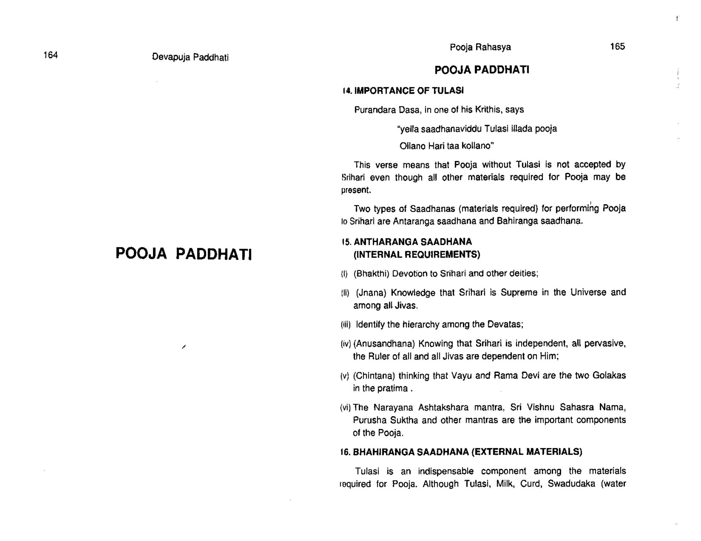
16. BHAHIRANGA SAADHANA (EXTERNAL MATERIALS)
14–16 · PDF p. 90 · printed p. 165 · Page image checked. English prose; romanized Sanskrit/Kannada spellings retained as visibly printed.
16. BHAHIRANGA SAADHANA (EXTERNAL MATERIALS)
Tulasi is an indispensable component among the materials required for Pooja. Although Tulasi, Milk, Curd, Swadudaka (water
Page-image detail: This printed page continues onto PDF p. 91; the passage boundary preserves the visible page break.
View the original PDF page image
Method of Collecting Tulasi; Agryodaka; Dwarapala Namana (continuation)
17–19 · PDF p. 91 · printed p. 166 · Page image reviewed; uncertain text remains. continuation; the source scan clips some right-gutter letters, so this passage is not marked fully verified.
mixed with cardamom, Pachakarpura etc.), Gandha (Gandha), Vastra, Ornaments, Dhupa, Deepa are all important components of Bahiranga saadana, Tulasi is supreme and is the best among them. Hence, Pooja without Tulasi is totally unacceptable to Srihari. Although Srihari may be decorated with a necklace studded with Navarathna (precious gems), if Tulasi were not to be there it is not Vyjayanti (Necklace of Vishnu). However, Tulasi is not superior to Antharanga Sadhanas. This is the intention of Purandara Dasa in his above quoted verse.
Page-image detail: The original page image remains authoritative for the clipped line endings.
View the original PDF page image
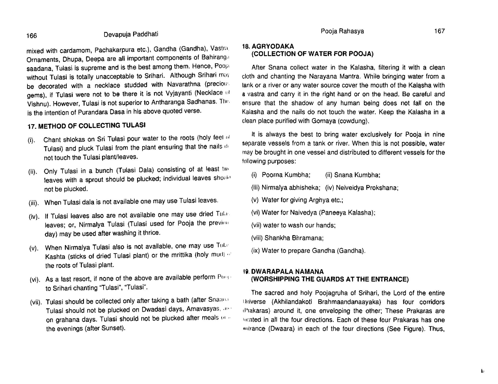
17. METHOD OF COLLECTING TULASI
17–19 · PDF p. 91 · printed p. 166 · Page image reviewed; uncertain text remains. English procedure; a few original right-gutter letter endings are clipped, so this passage is not marked fully verified.
17. METHOD OF COLLECTING TULASI
(i). Chant shlokas on Sri Tulasi, pour water to the roots (holy feet of Tulasi) and pluck Tulasi from the plant ensuring that the nails do not touch the Tulasi plant/leaves.
(ii). Only Tulasi in a bunch (Tulasi Dala) consisting of at least two leaves with a sprout should be plucked; individual leaves should not be plucked.
(iii). When Tulasi dala is not available one may use Tulasi leaves.
(iv). If Tulasi leaves also are not available one may use dried Tulasi leaves; or, Nirmalya Tulasi (Tulasi used for Pooja the previous day) may be used after washing it thrice.
(v). When Nirmalya Tulasi also is not available, one may use Tulasi Kashta (sticks of dried Tulasi plant) or the mrittika (holy mud) at the roots of Tulasi plant.
(vi). As a last resort, if none of the above are available perform Pooja to Srihari chanting "Tulasi", "Tulasi".
(vii). Tulasi should be collected only after taking a bath (after Snana). Tulasi should not be plucked on Dwadasi days, Amavasya, or on grahana days. Tulasi should not be plucked after meals or in the evenings (after Sunset).
Page-image detail: The original page image remains authoritative for the clipped line endings.
View the original PDF page image
18. AGRYODAKA
17–19 · PDF p. 91 · printed p. 167 · Page image checked. English procedure; heading capitalization and spellings follow the printed page.
18. AGRYODAKA
(COLLECTION OF WATER FOR POOJA)
After Snana collect water in the Kalasha, filtering it with a clean cloth and chanting the Narayana Mantra. While bringing water from a tank or a river or any water source cover the mouth of the Kalasha with a vastra and carry it in the right hand or on the head. Be careful and ensure that the shadow of any human being does not fall on the Kalasha and the nails do not touch the water. Keep the Kalasha in a clean place purified with Gomaya (cowdung).
It is always the best to bring water exclusively for Pooja in nine separate vessels from a tank or river. When this is not possible, water may be brought in one vessel and distributed to different vessels for the following purposes:
(i) Poorna Kumbha; (ii) Snana Kumbha;
(iii) Nirmalya abhisheka; (iv) Neiveidya Prokshana;
(v) Water for giving Arghya etc.;
(vi) Water for Naivedya (Paneeya Kalasha);
(vii) water to wash our hands;
(viii) Shankha Bhramana;
(ix) Water to prepare Gandha (Gandha).
Page-image detail: The following Dwarapala heading and opening prose on the same printed page are linked separately as R091R-03.
View the original PDF page image
19. DWARAPALA NAMANA (WORSHIPPING THE GUARDS AT THE ENTRANCE)
19 · PDF p. 91 · printed p. 167 · Page image checked. English prose; romanized terms retained as visibly printed.
19. DWARAPALA NAMANA
(WORSHIPPING THE GUARDS AT THE ENTRANCE)
The sacred and holy Poojagruha of Srihari, the Lord of the entire Universe (Akhilandakoti Brahmaandanaayaka) has four corridors (Prakaras) around it, one enveloping the other; These Prakaras are oriented in all the four directions. Each of these four Prakaras has one entrance (Dwaara) in each of the four directions (See Figure). Thus,
Page-image detail: The sentence continues in the table and doorway diagram on printed p. 168 (PDF p. 92).
View the original PDF page image
Dwarapala Namana; Devagruha Pravesha (continuation)
19–20 · PDF p. 92 · printed p. 168 · Page image checked. prose and entrance table; the spatial doorway diagram is retained in the linked source image.
There are sixteen entrances in all; all of them are guarded at the doors by devatas (dwarapaalakaas) as described below:
| ENTRANCE | 1 | 2 | 3 | 4 |
| --- | --- | --- | --- | --- |
| EAST | SRI | DYU (BHARATI) | PRANA — CHAKSHU — SURYA | JAYA–VIJAYA |
| SOUTH | SRI | DIK (BHARATI) | VYAANA — SHROTRA — SOMA | BALA–PRABALA |
| WEST | SRI | PRITHVI (SRI) | APAANA — VAK — AGNI | NANDA–SUNANDA |
| NORTH | SRI | VIDYUT (BHARATI) | SAMAANA — MANAS — INDRA | KUMUDA–KUMUDAKSHA |
The printed diagram below the table depicts the four concentric entrances and repeats these placements. See the linked page image for its spatial layout.
Page-image detail: The table contains all sixteen gatekeeper positions. The nested doorway diagram is retained in the linked scan for exact geometry.
View the original PDF page image
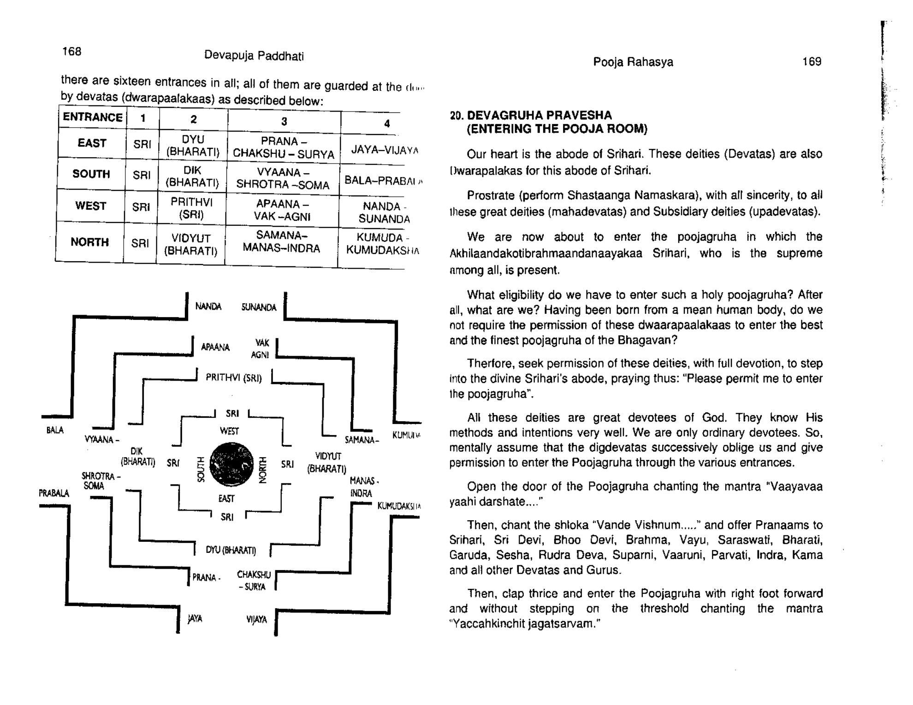
20. DEVAGRUHA PRAVESHA
19–20 · PDF p. 92 · printed p. 169 · Page image checked. English procedure; quoted mantra spellings follow the printed page and should be independently checked for Sanskrit use.
20. DEVAGRUHA PRAVESHA
(ENTERING THE POOJA ROOM)
Our heart is the abode of Srihari. These deities (Devatas) are also Dwarapalakas for this abode of Srihari.
Prostrate (perform Shastaanga Namaskara), with all sincerity, to all these great deities (mahadevatas) and Subsidiary deities (upadevatas).
We are now about to enter the poojagruha in which the Akhilaandakotibrahmaandanaayakaa Srihari, who is the supreme among all, is present.
What eligibility do we have to enter such a holy poojagruha? After all, what are we? Having been born from a mean human body, do we not require the permission of these dwaarapaalakaas to enter the best and the finest poojagruha of the Bhagavan?
Therefore, seek permission of these deities, with full devotion, to step into the divine Srihari's abode, praying thus: "Please permit me to enter the poojagruha".
All these deities are great devotees of God. They know His methods and intentions very well. We are only ordinary devotees. So, mentally assume that the digdevatas successively oblige us and give permission to enter the Poojagruha through the various entrances.
Open the door of the Poojagruha chanting the mantra "Vaayavaa yaahi darshate...."
Then, chant the shloka "Vande Vishnum....." and offer Pranaams to Srihari, Sri Devi, Bhoo Devi, Brahma, Vayu, Saraswati, Bharati, Garuda, Sesha, Rudra Deva, Suparni, Vaaruni, Parvati, Indra, Kama and all other Devatas and Gurus.
Then, clap thrice and enter the Poojagruha with right foot forward and without stepping on the threshold chanting the mantra "Yaccakimchit jagatsarvam.
View the original PDF page image
Devagruha Pravesha; Deepa Prajvalana; Vighna Nivarana; Prarthana (continuation)
20–23 · PDF p. 93 · printed p. 170 · Page image checked. English prose; no Sanskrit line occurs in this continuation.
Srihari is present everywhere in the Devagruha. One must imagine that Srihari is the indweller in the ground where we stand, the walls all round, the door outside, elegant mantapa, sacred pedestal (peetha), tall pillars, vessels we use, pure water, flowers, fruits, gandha, deepa, dhupa, naivedya, and the idols for which we perform archana; above all, in every part of the person performing the pooja and his mind.
View the original PDF page image
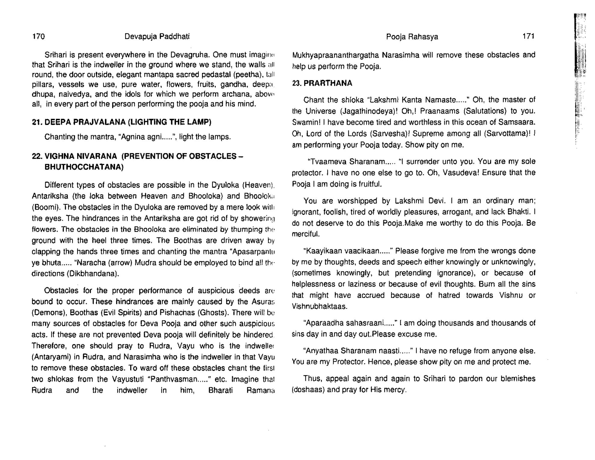
21. DEEPA PRAJVALANA (LIGHTING THE LAMP)
20–23 · PDF p. 93 · printed p. 170 · Page image checked. English instruction; the abbreviated mantra is reproduced as printed.
21. DEEPA PRAJVALANA (LIGHTING THE LAMP)
Chanting the mantra, "Agnina agni.....", light the lamps.
View the original PDF page image
22. VIGHNA NIVARANA (PREVENTION OF OBSTACLES -
20–23 · PDF p. 93 · printed p. 170 · Page image checked. English procedure; quoted mantra/stotra fragments are retained as visibly printed and require independent Sanskrit verification.
22. VIGHNA NIVARANA (PREVENTION OF OBSTACLES – BHUTHOCCHATANA)
Different types of obstacles are possible in the Dyuloka (Heaven), Antariksha (the loka between Heaven and Bhooloka) and Bhooloka (Boomi). The obstacles in the Dyuloka are removed by a mere look with the eyes. The hindrances in the Antariksha are got rid of by showering flowers. The obstacles in the Bhooloka are eliminated by thumping the ground with the heel three times. The Boothas are driven away by clapping the hands three times and chanting the mantra "Apasarpantu ye bhuta....." Naracha (arrow) Mudra should be employed to bind all the directions (Dikbhandana).
Obstacles for the proper performance of auspicious deeds are bound to occur. These hindrances are mainly caused by the Asuras (Demons), Boothas (Evil Spirits) and Pishachas (Ghosts). There will be many sources of obstacles for Deva Pooja and other such auspicious acts. If these are not prevented Deva pooja will definitely be hindered. Therefore, one should pray to Rudra, Vayu who is the indweller (Antaryami) in Rudra, and Narasimha who is the indweller in that Vayu to remove these obstacles. To ward off these obstacles chant the first two shlokas from the Vayustuti "Panthvasman....." etc. Imagine that Rudra and the indweller in him, Bharati Ramana Mukhyapraananthargatha Narasimha will remove these obstacles and help us perform the Pooja.
Page-image detail: The final sentence continues at the top of printed p. 171, separately linked as R093R-01.
View the original PDF page image
22. VIGHNA NIVARANA (continuation)
22 · PDF p. 93 · printed p. 171 · Page image checked. English prose; romanized Sanskrit name retained as visibly printed.
Mukhyapraananthargatha Narasimha will remove these obstacles and help us perform the Pooja.
View the original PDF page image
23. PRARTHANA
20–23 · PDF p. 93 · printed p. 171 · Page image checked. English prose; quoted Sanskrit fragments are retained as visibly printed and require independent Sanskrit verification.
23. PRARTHANA
Chant the shloka "Lakshmi Kanta Namaste....." Oh, the master of the Universe (Jagathinodeya)! Oh,! Praanaams (Salutations) to you. Swamin! I have become tired and worthless in this ocean of Samsaara. Oh, Lord of the Lords (Sarvesha)! Supreme among all (Sarvottama)! I am performing your Pooja today. Show pity on me.
"Tvaameva Sharanam....." I surrender unto you. You are my sole protector. I have no one else to go to. Oh, Vasudeva! Ensure that the Pooja I am doing is fruitful.
You are worshipped by Lakshmi Devi. I am an ordinary man; Ignorant, foolish, tired of worldly pleasures, arrogant, and lack Bhakti. I do not deserve to do this Pooja. Make me worthy to do this Pooja. Be merciful.
"Kaayikaan vaacikaan....." Please forgive me from the wrongs done by me by thoughts, deeds and speech either knowingly or unknowingly, (sometimes knowingly, but pretending ignorance), or because of helplessness or laziness or because of evil thoughts. Burn all the sins that might have accrued because of hatred towards Vishnu or Vishnubhaktaas.
"Aparaadha sahasraani....." I am doing thousands and thousands of sins day in and day out. Please excuse me.
"Anyathaa Sharanam naasti....." I have no refuge from anyone else. You are my Protector. Hence, please show pity on me and protect me.
Thus, appeal again and again to Srihari to pardon our blemishes (doshaas) and pray for His mercy.
View the original PDF page image
Prarthana; Manushya Gandha Nivarana; Brahmapara Stotra; Ghanta Vadana (continuation)
23–26 · PDF p. 94 · printed p. 172 · Page image checked. English prose.
Srihari's mercy is like a milky ocean (Ksheera saagara). He will, without doubt, wipe off all the sins of devotees who bow and pray to Him with humility.
Our prayers should reflect the inner feelings of a man sincerely repenting for the sins he has committed. Mere words from the lips are not sufficient. There must be a keen desire for salvation.
Plead to Srihari with bowed head, folded hands, and with a pure heart to pardon all our Doshas and accept the Pooja performed by us, and cast His kind and merciful glance on us.
View the original PDF page image
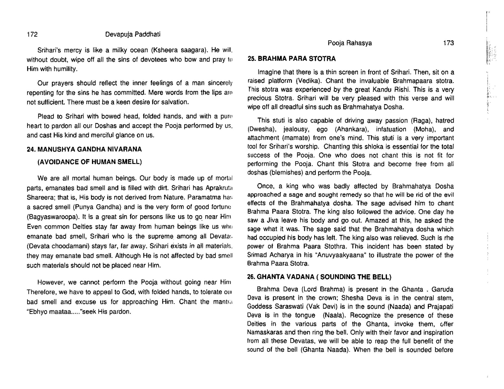
24. MANUSHYA GANDHA NIVARANA
23–26 · PDF p. 94 · printed p. 172 · Page image checked. English prose; the abbreviated mantra is reproduced as printed.
24. MANUSHYA GANDHA NIVARANA
(AVOIDANCE OF HUMAN SMELL)
We are all mortal human beings. Our body is made up of mortal parts, emanates bad smell and is filled with dirt. Srihari has Aprakruti Shareera; that is, His body is not derived from Nature. Paramatma has a sacred smell (Punya Gandha) and is the very form of good fortune (Bagyaswaroopa). It is a great sin for persons like us to go near Him. Even common Deities stay far away from human beings like us who emanate bad smell, Srihari who is the supreme among all Devatas (Devata choodamani) stays far, far away. Srihari exists in all materials, they may emanate bad smell. Although He is not affected by bad smell such materials should not be placed near Him.
However, we cannot perform the Pooja without going near Him. Therefore, we have to appeal to God, with folded hands, to tolerate our bad smell and excuse us for approaching Him. Chant the mantra "Ebhyo maataa....." seek His pardon.
View the original PDF page image
Prarthana; Manushya Gandha Nivarana; Brahmapara Stotra; Ghanta Vadana (continuation)
23–26 · PDF p. 94 · printed p. 173 · Page image checked. English prose; title and transliterated spellings follow the printed page.
25. BRAHMA PARA STOTRA
Imagine that there is a thin screen in front of Srihari. Then, sit on a raised platform (Vedika). Chant the invaluable Brahmapaara stotra. This stotra was experienced by the great Kandu Rishi. This is a very precious Stotra. Srihari will be very pleased with this verse and will wipe off all dreadful sins such as Brahmahatya Dosha.
This stuti is also capable of driving away passion (Raga), hatred (Dwesha), jealousy, ego (Ahankara), infatuation (Moha), and attachment (mamate) from one's mind. This stuti is a very important tool for Srihari's worship. Chanting this shloka is essential for the total success of the Pooja. One who does not chant this is not fit for performing the Pooja. Chant this Stotra and become free from all doshas (blemishes) and perform the Pooja.
Once, a king who was badly affected by Brahmahatya Dosha approached a sage and sought remedy so that he will be rid of the evil effects of the Brahmahatya dosha. The sage advised him to chant Brahma Paara Stotra. The king also followed the advice. One day he saw a Jiva leave his body and go out. Amazed at this, he asked the sage what it was. The sage said that the Brahmahatya dosha which had occupied his body has left. The king also was relieved. Such is the power of Brahma Paara Stothra. This incident has been stated by Srimad Acharya in his "Anuvyaakyaana" to illustrate the power of the Brahma Paara Stotra.
View the original PDF page image
26. GHANTA VADANA ( SOUNDING THE BELL)
23–26 · PDF p. 94 · printed p. 173 · Page image checked. continuation through the page boundary; the sentence continues on PDF p. 95.
26. GHANTA VADANA (SOUNDING THE BELL)
Brahma Deva (Lord Brahma) is present in the Ghanta. Garuda Deva is present in the crown; Shesha Deva is in the central stem, Goddess Saraswati (Vak Devi) is in the sound (Naada) and Prajapati Deva is in the tongue (Naala). Recognize the presence of these Deities in the various parts of the Ghanta, invoke them, offer Namaskaras and then ring the bell. Only with their favor and inspiration from all these Devatas, we will be able to reap the full benefit of the sound of the bell (Ghanta Naada). When the bell is sounded before
Page-image detail: The sentence continues on printed p. 174, PDF p. 95, in R095L-01.
View the original PDF page image
Ghanta Vadana; Mantapa Dhyana (continuation)
26–27 · PDF p. 95 · printed p. 174 · Page image checked. English prose and bell placement; roman mantra text is retained as visibly printed and needs independent Sanskrit verification.
Starting the Pooja, the Devatas and the divine power will enter the Pooja gruha and the Asuras are driven out of the Poojagruha.
Unless a bell made of bronze is sounded the evil spirits are not driven out. Therefore only bells made of bronze should necessarily be used.
It is said that Srihari resides in the house of that person who has a Ghanta with a Garuda or Sudharshana Chakra. It is necessary that one should ring the bell whenever Abhisheka, Dhupa, Deepa, Naivedya, Alankara and before putting Him to sleep (shayana) are offered. Performing Abhisheka and simultaneously ringing the bell is very sacred.
Then, think that the screen is removed.
Page-image detail: Diagram visually checked: Garuda is at the finial/crown, Sesha is on the handle/stem, Brahma is associated with the bell body, and Prajapati is at the clapper. This spatial information comes from the PDF page image.
View the original PDF page image
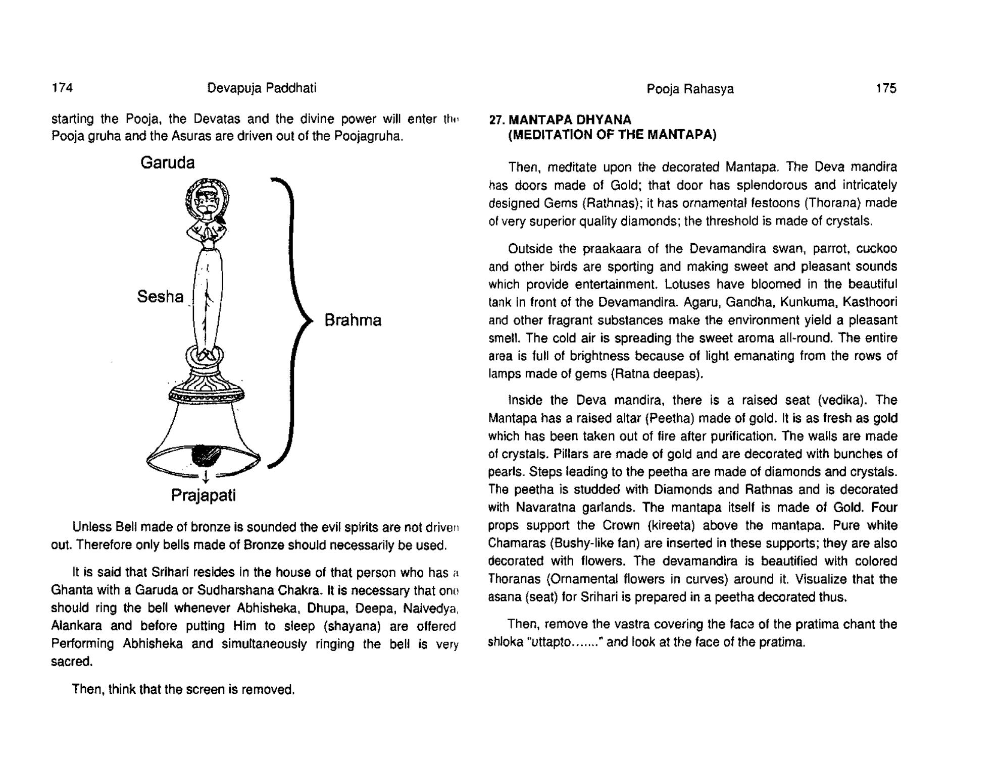
27. MANTAPA DHYANA
26–27 · PDF p. 95 · printed p. 175 · Page image checked. English prose and bell placement; roman mantra text is retained as visibly printed and needs independent Sanskrit verification.
27. MANTAPA DHYANA
(MEDITATION OF THE MANTAPA)
Then, meditate upon the decorated Mantapa. The Deva mandira
has doors made of Gold; that door has splendorous and intricately
designed Gems (Rathnas); it has ornamental festoons (Thorana) made
of very superior quality diamonds; the threshold is made of crystals.
Outside the praakaara of the Devamandira swan, parrot, cuckoo
and other birds are sporting and making sweet and pleasant sounds
which provide entertainment. Lotuses have bloomed in the beautiful
tank in front of the Devamandira. Agaru, Gandha, Kunkuma, Kasthoori
and other fragrant substances make the environment yield a pleasant
smell. The cold air is spreading the sweet aroma all-round. The entire
area is full of brightness because of light emanating from the rows of
lamps made of gems (Ratna deepas).
Inside the Deva mandira, there is a raised seat (vedika). The
Mantapa has a raised altar (Peetha) made of gold. lt is as fresh as gold
which has been taken out of fire after purification. The walls are made
of crystals. Pillars are made of gold and are decorated with bunches of
pearls. Steps leading to the peetha are made of diamonds and crystals.
The peetha is studded with Diamonds and Rathnas and is decorated
with Navaratna garlands. The mantapa itself is made of Gold. Four
props support the Crown (kireeta) above the mantapa. Pure white
Chamaras (Bushy-like fan) are inserted in these supports they are also
decorated with flowers. The Devamandira is beautified with colored
Thoranas (Ornamental flowers in curves) around it. Visualize that the
asana (seat) for Srihari is prepared in a peetha decorated thus.
Then, remove the vastra covering the face of the pratima chant the
shloka "uttapto......." and look at the face of the pratima.
View the original PDF page image
Mantapa Dhyana; Nirmalya Visarjana and Abhisheka (continuation)
27–28 · PDF p. 96 · printed p. 176 · Page image checked. English prose; Sanskrit/roman mantra spellings retained as visibly printed.
Meditate on Srihari with folded hands thus:
“Krupayottiiyatam.....” “Hey Bhagwan! I am doing this Shodashopachara Pooja (Sixteen ways of worshipping God) inspired by you and for your joy. Therefore, awaken from your shayana (yoga nidra). You have long, broad and pleasing eyes. Look at me with your kind and merciful eyes and favor me”.
“Aayatabhyaam.....” Offer prayers with folded hands and awaken Srihari. Then, take the idols of Srihari and place Him in the Mantapa; do bhuthocchatana displaying the Chotika mudra (snapping the forefinger and the thumb) from the place where you are already seated and chant the shloka “Apakramanthu.....” It is sufficient if one picturises, with sincerity and devotion, the mantapa of Srihari and its affluent surrounding thus. Srihari will be delighted and pleased.
View the original PDF page image
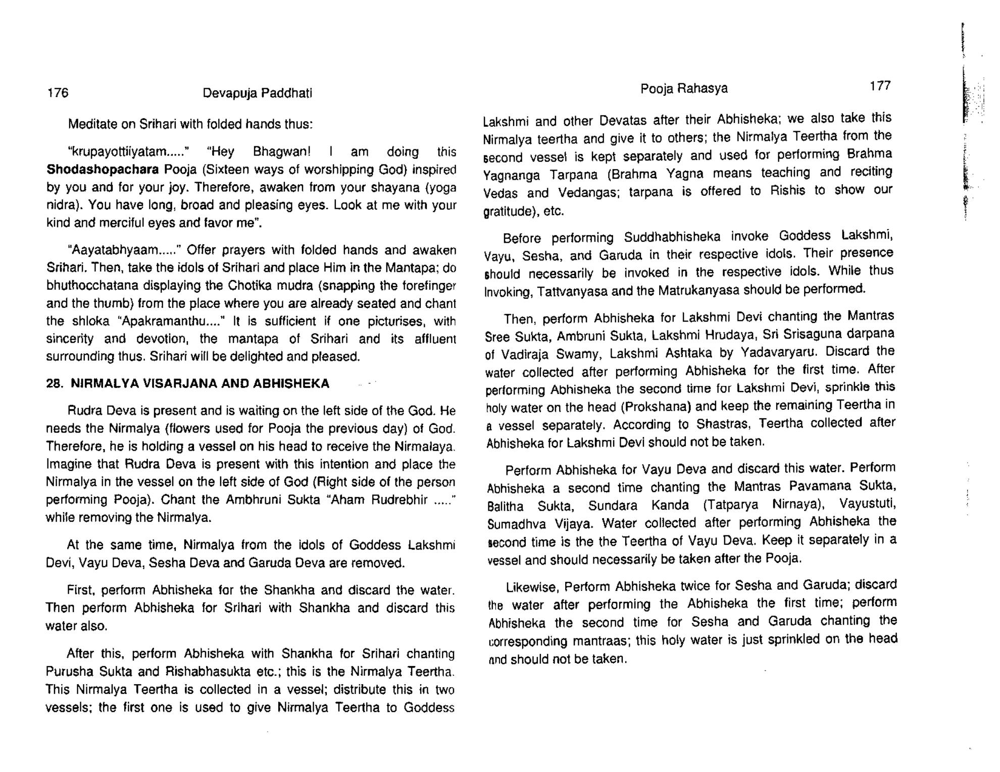
28. NIRMALYA VISARJANA AND ABHISHEKA
27–28 · PDF p. 96 · printed p. 176 · Page image checked. English prose; Sanskrit/roman mantra spellings retained as visibly printed.
28. NIRMALYA VISARJANA AND ABHISHEKA
Rudra Deva is present and is waiting on the left side of the God. He needs the Nirmalya (flowers used for Pooja the previous day) of God. Therefore, he is holding a vessel on his head to receive the Nirmalaya. Imagine that Rudra Deva is present with this intention and place the Nirmalya in the vessel on the left side of God (Right side of the person performing Pooja). Chant the Ambhruni Sukta “Aham Rudrebhir .....” while removing the Nirmalya.
At the same time, Nirmalya from the idols of Goddess Lakshmi Devi, Vayu Deva, Sesha Deva and Garuda Deva are removed.
First, perform Abhisheka for the Shankha and discard the water. Then perform Abhisheka for Srihari with Shankha and discard this water also.
After this, perform Abhisheka with Shankha for Srihari chanting Purusha Sukta and Rishabhasukta etc.; this is the Nirmalya Teertha. This Nirmalya Teertha is collected in a vessel; distribute this in two vessels; the first one is used to give Nirmalya Teertha to Goddess
View the original PDF page image
Mantapa Dhyana; Nirmalya Visarjana and Abhisheka (continuation)
27–28 · PDF p. 96 · printed p. 177 · Page image checked. English prose; Sanskrit/roman mantra spellings retained as visibly printed.
Lakshmi and other Devatas after their Abhisheka; we also take this Nirmalya teertha and give it to others; the Nirmalya Teertha from the second vessel is kept separately and used for performing Brahma Yagnanga Tarpana (Brahma Yagna means teaching and reciting Vedas and Vedangas; tarpana is offered to Rishis to show our gratitude), etc.
Before performing Suddhabhisheka invoke Goddess Lakshmi, Vayu, Sesha, and Garuda in their respective idols. Their presence should necessarily be invoked in the respective idols. While thus invoking, Tattvanyasa and the Matrukanyasa should be performed.
Then, perform Abhisheka for Lakshmi Devi chanting the Mantras Sree Sukta, Ambruni Sukta, Lakshmi Hrudaya, Sri Srisaguna darpana of Vadiraja Swamy, Lakshmi Ashtaka by Yadavaryaru. Discard the water collected after performing Abhisheka for the first time. After performing Abhisheka the second time for Lakshmi Devi, sprinkle this holy water on the head (Prokshana) and keep the remaining Teertha in a vessel separately. According to Shastras, Teertha collected after Abhisheka for Lakshmi Devi should not be taken.
Perform Abhisheka for Vayu Deva and discard this water. Perform Abhisheka a second time chanting the Mantras Pavamana Sukta, Balitha Sukta, Sundara Kanda (Tatparya Nirnaya), Vayustuti, Sumadhva Vijaya. Water collected after performing Abhisheka the second time is the Teertha of Vayu Deva. Keep it separately in a vessel and should necessarily be taken after the Pooja.
Likewise, Perform Abhisheka twice for Sesha and Garuda; discard the water after performing the Abhisheka the first time; perform Abhisheka the second time for Sesha and Garuda chanting the corresponding mantraas; this holy water is just sprinkled on the head and should not be taken.
View the original PDF page image
Nirmalya Visarjana and Abhisheka; Golaka Chintana; Devata Avahana; Bhutocchatana; Preparing the Asana (continuation)
28–31 · PDF p. 97 · printed p. 178 · Page image reviewed; uncertain text remains. English prose; clipped right-edge letters restored from context.
Another important point is to be noted here.
Pooja for Lakshmi Devi, Vayu Deva, Garuda Deva and Sesha Deva alone should be performed while performing Pooja to Srihari. No other devataas are worthy of Pooja in His presence.
Pooja for Siva, Navagruha, Ganapati and other devataas, Rishis, and Padmanabha Teertha, Jayateertha, Vyasaraja, Vaadiraja, Raghottama Teertha, Raghavendra and all other Gurus and their worship should be performed only after completing Srihari's Pooja. This means that Pooja for these devataas and Gurus should be done only after keeping the idols and shaligraamas in the God's box.
Pooja for Devatas other than Lakshmi, Vayu, Garuda and Sesha in the presence of Srihari is against the rules prescribed in the Shastras.
Likewise, perform Abhisheka for all Devatas chanting the corresponding Mantras.
View the original PDF page image
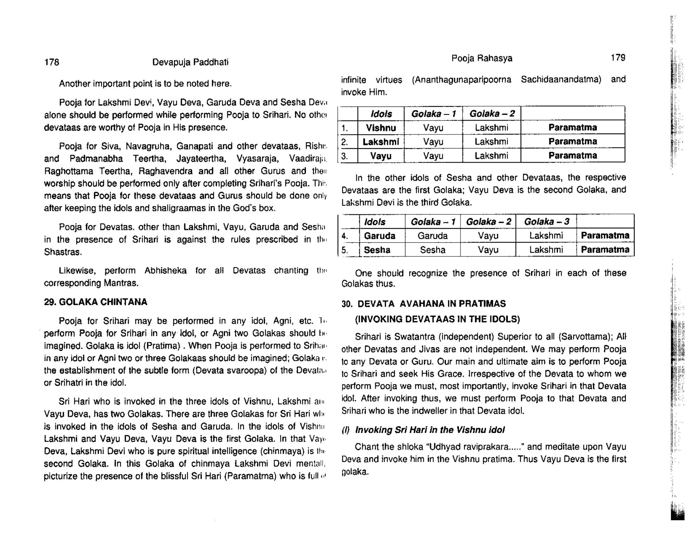
29. GOLAKA CHINTANA
28–31 · PDF p. 97 · printed p. 178 · Page image reviewed; uncertain text remains. English prose; clipped right-edge letters restored from context.
29. GOLAKA CHINTANA
Pooja for Srihari may be performed in any idol, Agni, etc. To perform Pooja for Srihari in any idol, or Agni two Golakas should be imagined. Golaka is idol (Pratima). When Pooja is performed to Srihari in any idol or Agni two or three Golakaas should be imagined; Golaka is the establishment of the subtle form (Devata svaroopa) of the Devata or Srihari in the idol.
Sri Hari who is invoked in the three idols of Vishnu, Lakshmi and Vayu Deva, has two Golakas. There are three Golakas for Sri Hari who is invoked in the idols of Sesha and Garuda. In the idols of Vishnu, Lakshmi and Vayu Deva, Vayu Deva is the first Golaka. In that Vayu Deva, Lakshmi Devi who is pure spiritual intelligence (chinmaya) is the second Golaka. In this Golaka of chinmaya Lakshmi Devi mentally picturize the presence of the blissful Sri Hari (Paramatma) who is full of
View the original PDF page image
Nirmalya Visarjana and Abhisheka; Golaka Chintana; Devata Avahana; Bhutocchatana; Preparing the Asana (continuation)
28–31 · PDF p. 97 · printed p. 179 · Page image checked. English prose and Golaka tables; roman mantra spellings retained as visibly printed.
infinite virtues (Ananthagunaparipoorna Sachidaanandatma) and invoke Him.
Idols | Golaka – 1 | Golaka – 2 | Inmost
1. Vishnu | Vayu | Lakshmi | Paramatma
2. Lakshmi | Vayu | Lakshmi | Paramatma
3. Vayu | Vayu | Lakshmi | Paramatma
In the other idols of Sesha and other Devataas, the respective Devataas are the first Golaka; Vayu Deva is the second Golaka, and Lakshmi Devi is the third Golaka.
Idols | Golaka – 1 | Golaka – 2 | Golaka – 3 | Inmost
4. Garuda | Garuda | Vayu | Lakshmi | Paramatma
5. Sesha | Sesha | Vayu | Lakshmi | Paramatma
One should recognize the presence of Srihari in each of these Golakas thus.
Page-image detail: The source table has an unlabeled last column containing Paramatma; “Inmost” is an editorial column label added for readability.
View the original PDF page image
30. DEVATA AVAHANA IN PRATIMAS
28–31 · PDF p. 97 · printed p. 179 · Page image checked. English prose and Golaka tables; roman mantra spellings retained as visibly printed.
30. DEVATA AVAHANA IN PRATIMAS
(INVOKING DEVATAAS IN THE IDOLS)
Srihari is Swatantra (independent) Superior to all (Sarvottama); All other Devatas and Jivas are not independent. We may perform Pooja to any Devata or Guru. Our main and ultimate aim is to perform Pooja to Srihari and seek His Grace. Irrespective of the Devata to whom we perform Pooja we must, most importantly, invoke Srihari in that Devata Idol. After invoking thus, we must perform Pooja to that Devata and Srihari who is the indweller in that Devata idol.
(1) Invoking Sri Hari in the Vishnu idol
Chant the shloka “Udhyad raviprakara.....” and meditate upon Vayu Deva and invoke him in the Vishnu pratima. Thus Vayu Deva is the first Golaka.
View the original PDF page image
Preparing the Asana; Sankalpa; Deva Prarthana; Kalasha Pooja (continuation)
31–34 · PDF p. 98 · printed p. 180 · Page image reviewed; uncertain text remains. English prose; clipped right-edge letters restored from context.
Chant the shloka “Kausheyapethavasanaam” and meditate upon Mahalakshmi Devi and invoke her in the Vayu golaka. Thus, Lakshmi Devi is the second golaka.
Chant the shloka “Udhyad bhasvat Samaabhasa:...” and meditate upon Srihari and invoke Him in the Lakshmi golaka.
(ii) Invoking Lakshmi Devi in any pratima of Lakshmi Devi
Shankha is the idol of Lakshmi Devi; pratimas of Lakshmi Devi may be made up of metals or stones. To invoke Lakshmi Devi in these idols, chant the shloka “Udhyad raviprakara.....” and meditate upon Vayu Deva and invoke him in the idol of Lakshmi Devi. Thus, Vayu Deva is the first Golaka.
Chant “Kausheyapethavasanaam” and meditate upon Mahalakshmi and invoke her in the Vayu golaka. Here, Lakshmi Devi is the second golaka.
Then, chant the shloka “Udhyad bhasvat Samaabhasa:...” and meditate upon Srihari who is residing in Lakshmi golaka and invoke Him.
(iii) Invoking Vayu Deva in Vayu Pratimas.
Chant the shloka “Udhyad raviprakara.....” and meditate upon Vayu Deva and invoke him in the Vayu Pratima. Here Vayu Deva is the first golaka.
Chant the shloka “Kausheyapethavasanaam” and meditate upon Mahalakshmi Devi and invoke her in the Vayu golaka. Here, Lakshmi Devi is the second golaka.
Chant the shloka “Udhyad bhasvat Samaabhasa:...” and meditate upon Srihari and invoke Him in the Lakshmi golaka.
View the original PDF page image
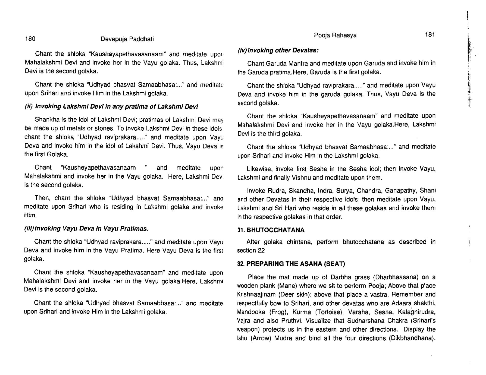
Preparing the Asana; Sankalpa; Deva Prarthana; Kalasha Pooja (continuation)
31–34 · PDF p. 98 · printed p. 181 · Page image checked. English prose; roman mantra spellings retained as visibly printed.
(iv) Invoking other Devatas:
Chant Garuda Mantra and meditate upon Garuda and invoke him in the Garuda pratima. Here, Garuda is the first golaka.
Chant the shloka “Udhyad raviprakara.....” and meditate upon Vayu Deva and invoke him in the garuda golaka. Thus, Vayu Deva is the second golaka.
Chant the shloka “Kausheyapethavasanaam” and meditate upon Mahalakshmi Devi and invoke her in the Vayu golaka. Here, Lakshmi Devi is the third golaka.
Chant the shloka “Udhyad bhasvat Samaabhasa:...” and meditate upon Srihari and invoke Him in the Lakshmi golaka.
Likewise, invoke first Sesha in the Sesha idol; then invoke Vayu, Lakshmi and finally Vishnu and meditate upon them.
Invoke Rudra, Skandha, Indra, Surya, Chandra, Ganapathy, Shani and other Devatas in their respective idols; then meditate upon Vayu, Lakshmi and Sri Hari who reside in all these golakas and invoke them in the respective golakas in that order.
31. BHUTOCCHATANA
After golaka chintana, perform bhutocchatana as described in section 22.
View the original PDF page image
32. PREPARING THE ASANA (SEAT)
31–34 · PDF p. 98 · printed p. 181 · Page image checked. English prose; roman mantra spellings retained as visibly printed.
32. PREPARING THE ASANA (SEAT)
Place the mat made up of Darbha grass (Dharbhaasana) on a wooden plank (Mane) where we sit to perform Pooja; Above that place Krishnaajinam (Deer skin); above that place a vastra. Remember and respectfully bow to Srihari, and other devatas who are Adaara shakthi, Mandooka (Frog), Kurma (Tortoise), Varaha, Sesha, Kalagnirudra, Vajra and also Pruthvi. Visualize that Sudharshana Chakra (Srihari's weapon) protects us in the eastern and other directions. Display the Ishu (Arrow) Mudra and bind all the four directions (Dikbhandhana).
View the original PDF page image
Kalasha Pooja; Shankha Pooja (continuation)
34–35 · PDF p. 99 · printed p. 182 · Page image checked. English prose; roman mantra spellings retained as visibly printed.
Raise the hands above the head and show the Chakra Mudra in all directions.
Do Pranayama and mentally resolve (Sankalpa) to perform Pooja with devotion stating the details of day, tithi, Nakshatra etc.
View the original PDF page image
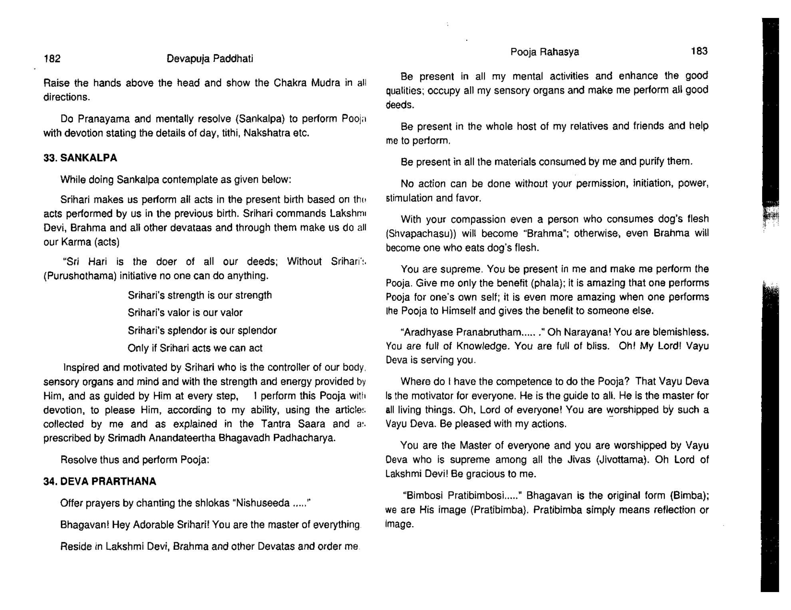
33. SANKALPA
34–35 · PDF p. 99 · printed p. 182 · Page image checked. English prose; roman mantra spellings retained as visibly printed.
33. SANKALPA
While doing Sankalpa contemplate as given below:
Srihari makes us perform all acts in the present birth based on the acts performed by us in the previous birth. Srihari commands Lakshmi Devi, Brahma and all other devataas and through them make us do all our Karma (acts).
“Sri Hari is the doer of all our deeds; Without Srihari's (Purushothama) initiative no one can do anything.
Srihari's strength is our strength
Srihari's valor is our valor
Srihari's splendor is our splendor
Only if Srihari acts we can act”
Inspired and motivated by Srihari who is the controller of our body, sensory organs and mind and with the strength and energy provided by Him, and as guided by Him at every step, I perform this Pooja with devotion, to please Him, according to my ability, using the articles collected by me and as explained in the Tantra Saara and as prescribed by Srimadh Anandateertha Bhagavadh Padhacharya.
Resolve thus and perform Pooja:
View the original PDF page image
34. DEVA PRARTHANA
34–35 · PDF p. 99 · printed p. 182 · Page image checked. English prose; roman mantra spellings retained as visibly printed.
34. DEVA PRARTHANA
Offer prayers by chanting the shlokas “Nishuseeda .....”
Bhagavan! Hey Adorable Srihari! You are the master of everything.
Reside in Lakshmi Devi, Brahma and other Devatas and order me.
View the original PDF page image
Kalasha Pooja; Shankha Pooja (continuation)
34–35 · PDF p. 99 · printed p. 183 · Page image checked. English prose; roman mantra spellings retained as visibly printed.
Be present in all my mental activities and enhance the good qualities; occupy all my sensory organs and make me perform all good deeds.
Be present in the whole host of my relatives and friends and help me to perform.
Be present in all the materials consumed by me and purify them.
No action can be done without your permission, initiation, power, stimulation and favor.
With your compassion even a person who consumes dog's flesh (Shvapachasu) will become “Brahma”; otherwise, even Brahma will become one who eats dog's flesh.
You are supreme. You be present in me and make me perform the Pooja. Give me only the benefit (phala); it is amazing that one performs Pooja for one's own self; it is even more amazing when one performs the Pooja to Himself and gives the benefit to someone else.
“Aradhyase Pranabrutham.....” Oh Narayana! You are blemishless. You are full of Knowledge. You are full of bliss. Oh! My Lord! Vayu Deva is serving you.
Where do I have the competence to do the Pooja? That Vayu Deva is the motivator for everyone. He is the guide to all. He is the master for all living things. Oh, Lord of everyone! You are worshipped by such a Vayu Deva. Be pleased with my actions.
You are the Master of everyone and you are worshipped by Vayu Deva who is supreme among all the Jivas (Jivottama). Oh Lord of Lakshmi Devi! Be gracious to me.
“Bimbosi Pratibimbosi.....” Bhagavan is the original form (Bimba); we are His image (Pratibimba). Pratibimba simply means reflection or image.
View the original PDF page image
Shankha Pooja; Arghyadi Pancha Patra Pooja (continuation)
35–36 · PDF p. 100 · printed p. 184 · Page image reviewed; uncertain text remains. English prose; a few letters at the right gutter are clipped and restored from context.
We see our reflection in the mirror. In such a situation when we, the Bimba, move the reflection also moves; when we do not move the reflection also does not move.
The characteristic features seen in the Bimba are also seen in the reflection (Pratibimba). It is not possible to see any feature in the reflection that is not there in the Bimba.
In the same way, Shastras describe animate beings (Chethanas) as the reflection of Bhagavan (Chetanottama).
Jiva appears similar to Bhagavan. He is under the control of Srihari. He is the pratibimba of such a Bhagavan.
“Oh, Swamin! You are the original form (Bimba); I am your image (Pratibimba).
But you are blemishless. I am full of blemishes.
You are limitless; I am finite.
You are blissful; I am full of sorrows.
You are the very form of knowledge; I am full of ignorance.
I am full of countless blemishes, Ignorance, wrong knowledge, suspicion, lust, anger, arrogance, attachment, selfishness, cheating, cruelty, wickedness, crooked nature, ungratefulness, and other such flaws. Oh, Bhagavan! Relieve me of my faults. I gratefully acknowledge your favor. For this favor bestowed on me I prostrate before you”. Thus, offer your prayers to Srihari.
Page-image detail: Printed p. 184 has right-edge clipping; the visible page image remains authoritative.
View the original PDF page image
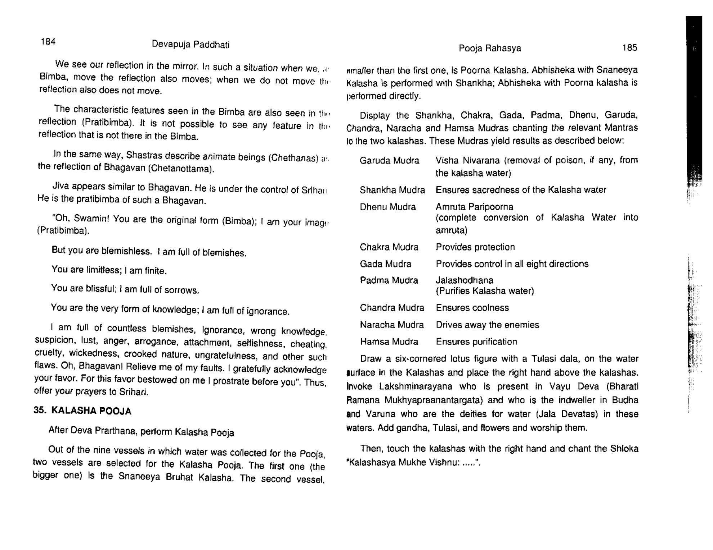
35. KALASHA POOJA
35–36 · PDF p. 100 · printed p. 184 · Page image checked. English Kalasha procedure and mudra-results table; the visibly abbreviated roman mantra quotation requires independent Sanskrit verification.
35. KALASHA POOJA
After Deva Prarthana, perform Kalasha Pooja.
Out of the nine vessels in which water was collected for the Pooja, two vessels are selected for the Kalasha Pooja. The first one (the bigger one) is the Snaaneeya Bruhat Kalasha. The second vessel, smaller than the first one, is Poorna Kalasha. Abhisheka with Snaaneeya Kalasha is performed with Shankha; Abhisheka with Poorna kalasha is performed directly.
View the original PDF page image
Shankha Pooja; Arghyadi Pancha Patra Pooja (continuation)
35–36 · PDF p. 100 · printed p. 185 · Page image checked. English Kalasha procedure and mudra-results table; the visibly abbreviated roman mantra quotation requires independent Sanskrit verification.
Display the Shankha, Chakra, Gada, Padma, Dhenu, Garuda, Chandra, Naracha and Hamsa Mudras chanting the relevant Mantras to the two kalashas. These Mudras yield results as described below:
Garuda Mudra — Visha Nivarana (removal of poison, if any, from the kalasha water)
Shankha Mudra — Ensures sacredness of the Kalasha water
Dhenu Mudra — Amruta Paripoorna (complete conversion of Kalasha Water into amruta)
Chakra Mudra — Provides protection
Gada Mudra — Provides control in all eight directions
Padma Mudra — Jalashodhana (Purifies Kalasha water)
Chandra Mudra — Ensures coolness
Naracha Mudra — Drives away the enemies
Hamsa Mudra — Ensures purification
Draw a six-cornered lotus figure with a Tulasi dala, on the water surface in the Kalashas and place the right hand above the kalashas. Invoke Lakshminarayana who is present in Vayu Deva (Bharati Ramana Mukhyapraananthargata), and who is the indweller in Budha and Varuna who are the deities for water (Jala Devatas) in these waters. Add gandha, Tulasi, and flowers and worship them.
Then, touch the kalashas with the right hand and chant the Shloka “Kalashasya Mukhe Vishnu: …..”.
View the original PDF page image
35. KALASHA POOJA (continuation)
35 · PDF p. 101 · printed p. 186 · Page image checked. English procedure; quoted roman mantras and Sanskrit names are retained as visibly printed and require independent Sanskrit verification.
Lord Vishnu is in the mouth (upper) portion of the Kalasha; Rudra is in the neck portion; Brahma is in lower part of the Kalasha; in the middle part are the Matru Ganas (as also Ajaadi 100 Rupas of Sri Hari).
Imagine that all Devatas in the seven oceans, seven islands, the entire world, Rig Veda, Yajur Veda, Sama Veda and Atharva Veda; the six components of Vedas (Vedangas) such as Shiksha, Kalpa, Vyakaran, Nirukta, Chandas and Jyotisha are present in the stomach portion of the kalasha. In addition, pray to devatas Gayatri, Savitri, Pushtikari, Shanti to come for Deva Pooja and help keep away all the sins (Durita).
View the original PDF page image
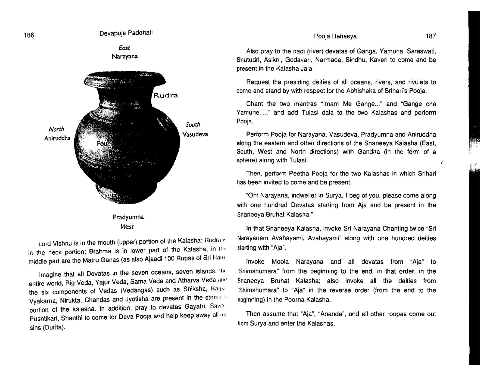
35. KALASHA POOJA (continuation)
35 · PDF p. 101 · printed p. 187 · Page image checked. English procedure; quoted roman mantras and Sanskrit names are retained as visibly printed and require independent Sanskrit verification.
Also pray to the nadi (river) devatas of Ganga, Yamuna, Saraswati, Shutudri, Asikni, Godavari, Narmada, Sindhu, Kaveri to come and be present in the Kalasha Jala.
Request the presiding deities of all oceans, rivers, and rivulets to come and stand by with respect for the Abhisheka of Srihari's Pooja.
Chant the two mantras “Imam Me Gange…” and “Gange cha Yamune……” and add Tulasi dala to the two Kalashas and perform Pooja.
Perform Pooja for Narayana, Vasudeva, Pradyumna and Aniruddha along the eastern and other directions of the Snaaneeya Kalasha (East, South, West and North directions) with Gandha (in the form of a sphere) along with Tulasi.
Then, perform Peetha Pooja for the two Kalashas in which Srihari has been invited to come and be present.
“Oh! Narayana, indweller in Surya, I beg of you, please come along with one hundred Devatas starting from Aja and be present in the Snaaneeya Bruhat Kalasha.”
In that Snaaneeya Kalasha, invoke Sri Narayana chanting twice “Sri Narayanam Avahayami, Avahayami” along with one hundred deities starting with “Aja”.
Invoke Moola Narayana and all devatas from “Aja” to “Shimshumara” from the beginning to the end, in that order, in the Snaaneeya Bruhat Kalasha; also invoke all the deities from “Shimshumara” to “Aja” in the reverse order (from the end to the beginning) in the Poorna Kalasha.
Then assume that “Aja”, “Aananda”, and all other roopas come out from Surya and enter the Kalashas.
View the original PDF page image
35. KALASHA POOJA (continuation)
35 · PDF p. 102 · printed p. 188 · Page image checked. English procedure; quoted roman mantras and Sanskrit names are retained as visibly printed and require independent Sanskrit verification.
Thereafter, perform Matrukanyasa, Tattvanyasa, Kruddholka and the other five Anganyasas, Aksharanyasa, etc.
Then, chant the shloka “Udhyat Bhasvat……” and touch both the Kalashas and chant the Moola mantra twelve times to ensure the unique and special presence of Srihari.
Then, pray “Oh, Devatas! Please be present in this place until the pooja is over and accept the Pooja performed by me with devotion and offer protection.”
Thereafter, show the following six mudras: Aavahana, Sthapana, Sannidana, Sammukheekharana, Sannorodhana and Avaguntana chanting the Narayana Mantra.
Chant Narayana Mantra and offer the ten upachaaras, viz., Arghya, Paadya, Achamana, Madhuparka, Punaraachamana, Snaana, Vastra, Vibhushana, Upaveeta and Asana, with flowers or by pouring water in a separate vessel to these devatas.
Then, offer gandha, Tulasi and flowers. Then, perform Aavarana Pooja to the presiding deities (Mooladeva) invoked in these Kalashas (Aavarana Pooja is described later). Once again offer the twelve upachaaras (Arghya, paadya, Achamana, Madhuparka, Punaachamana, Snaana, Vastra, Vibhushana, Upaveeta, Asana, Gandha and flowers) to these Aavarana devatas.
After performing all these upachaaras show Naivedya, Namaskaara to the peetha Devatas, Aavarana Devatas and also to Moola Roopi.
Then, chant the Mantra “Kalasha Keertimaayushyam……” The kalasha Devatas for whom we performed the Pooja bestow on us fame, long life, good knowledge, intelligence, lot of wealth, strength, display of self-worthiness and redress our sins and increase our Punya (Virtues).
View the original PDF page image
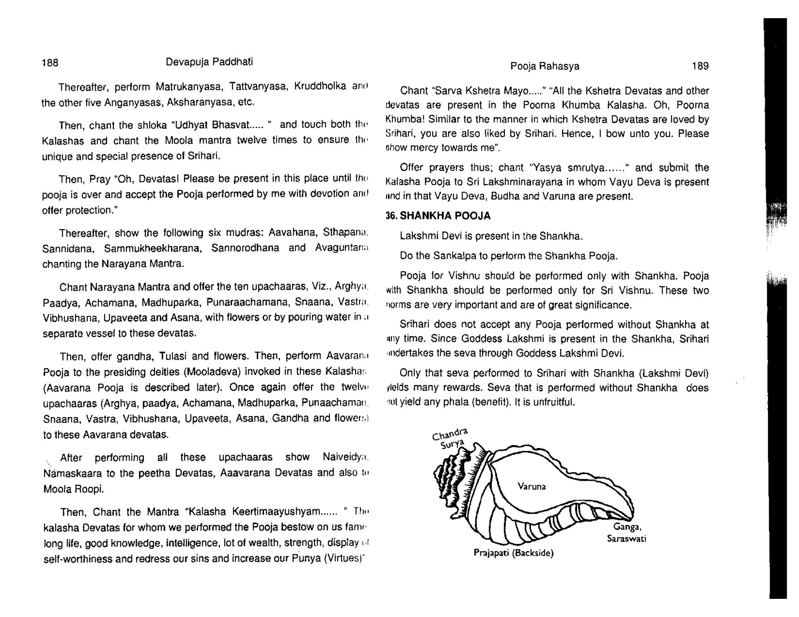
35. KALASHA POOJA (continuation)
35 · PDF p. 102 · printed p. 189 · Page image checked. English procedure; quoted roman mantras and Sanskrit names are retained as visibly printed and require independent Sanskrit verification.
Chant “Sarva Kshetra Mayo……” “All the Kshetra Devatas and other devatas are present in the Poorna Khumba Kalasha. Oh, Poorna Khumba! Similar to the manner in which Kshetra Devatas are loved by Srihari, you are also liked by Srihari. Hence, I bow unto you. Please show mercy towards me”.
Offer prayers thus; chant “Yasya smrtya…..” and submit the Kalasha Pooja to Sri Lakshminarayana in whom Vayu Deva is present and in that Vayu Deva, Budha and Varuna are present.
View the original PDF page image
36. SHANKHA POOJA
37 · PDF p. 102 · printed p. 189 · Page image checked. English procedure; quoted roman mantras and Sanskrit names are retained as visibly printed and require independent Sanskrit verification.
36. SHANKHA POOJA
Lakshmi Devi is present in the Shankha.
Do the Sankalpa to perform the Shankha Pooja.
Pooja for Vishnu should be performed only with Shankha. Pooja with Shankha should be performed only for Sri Vishnu. These two norms are very important and are of great significance.
Srihari does not accept any Pooja performed without Shankha at any time. Since Goddess Lakshmi is present in the Shankha, Srihari undertakes the seva through Goddess Lakshmi Devi.
Only that seva performed to Srihari with Shankha (Lakshmi Devi) yields many rewards. Seva that is performed without Shankha does not yield any phala (benefit). It is unfruitful.
Diagram labels: Chandra and Surya at the upper tip; Varuna in the central cavity; Ganga and Saraswati at the tip; Prajapati at the backside.
View the original PDF page image
Shankha Pooja (continuation)
38 · PDF p. 103 · printed p. 190 · Page image checked. English prose and table; Sanskrit/roman mantra spellings retained as visibly printed and should be checked against an authoritative Sanskrit text.
Besides, Goddess Lakshmi performs Pooja only to Srihari and none else. Hence, Pooja with Shankha which symbolizes Lakshmi Devi should not be performed at any time to any other Devatas.
When Pooja is performed with Shankha to any other Devatas it is equivalent to Lakshmi Devi performing Pooja to other Devatas. This would result in harmful consequences. Therefore, it should not be done at any time.
The virtue (punya) attained by a devotee who performs Pooja with Shankha is matchless.
To begin with, prayers should be offered to Shankha chanting the shlokas as follows:
“Tvam pura Saagarotpanna …..” Oh, Shankha! You are born in the oceans and Srihari is holding you in the right hand. All devatas offer prayers to you with devotion and respect. I bow respectfully unto you.
“Garbhaa Devaarinaarenaam …..” Thousands of wives of daityas live in the deep oceans. Their pregnancy is aborted to thousand pieces when they hear your sound (Naada).
“Tava Naadena …..” Oh, Panchajanya! Your radiance is like thousands of moons (Chandra) shining. I bow unto you.
“Darshanena Hi Shankhasya …..” Just like the snow melts when the sun rises, all the sins will be washed off by a mere look at you. What more can I say when I touch you (to perform the Pooja)?
“Natvaa Shankham …” That Vishnu Bhaktha who prays to Shankha with these mantras and performs pooja holding the Shankha in the hand will receive matchless virtues (Punya).
“Trilokyaam yaani…..” By the order of Srihari, all the devatas of the three worlds will be present in the Shankha. Therefore one has to perform Pooja for the Shankha.
View the original PDF page image
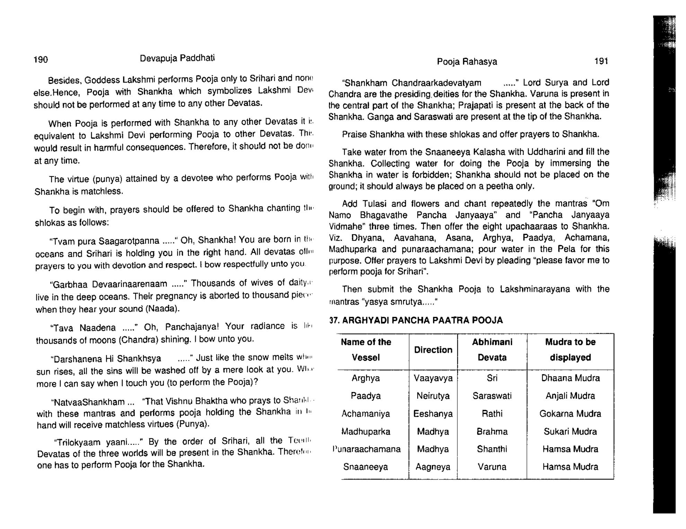
Shankha Pooja (continuation)
38 · PDF p. 103 · printed p. 191 · Page image checked. English prose and table; Sanskrit/roman mantra spellings retained as visibly printed and should be checked against an authoritative Sanskrit text.
“Shankham Chandraarkadevatyam …..” Lord Surya and Lord Chandra are the presiding deities for the Shankha. Varuna is present in the central part of the Shankha; Prajapati is present at the back of the Shankha. Ganga and Saraswati are present at the tip of the Shankha.
Praise Shankha with these shlokas and offer prayers to Shankha.
Take water from the Snaaneeya Kalasha with Uddharini and fill the Shankha. Collecting water for doing the Pooja by immersing the Shankha in water is forbidden; Shankha should not be placed on the ground; it should always be placed on a peetha only.
Add Tulasi and flowers and chant repeatedly the mantras “Om Namo Bhagavathe Pancha Janyaaya” and “Pancha Janyaaya Vidmahe” three times. Then offer the eight upachaaraas to Shankha: Dhyana, Aavahana, Asana, Arghya, Paadya, Achamana, Madhuparka and punaraachamana; pour water in the Pela for this purpose. Offer prayers to Lakshmi Devi by pleading “please favor me to perform pooja for Srihari”.
Then submit the Shankha Pooja to Lakshminarayana with the mantras “yasya smrutya…..”
Page-image detail: The printed page contains the Arghyadi vessel table. Preserve its directions, devatas and mudras through this source image when OCR table layout is unclear.
View the original PDF page image
37. ARGHYADI PANCHA PAATRA POOJA
38 · PDF p. 103 · printed p. 191 · Page image checked. English prose and table; Sanskrit/roman mantra spellings retained as visibly printed and should be checked against an authoritative Sanskrit text.
37. ARGHYADI PANCHA PAATRA POOJA
Name of the Vessel | Direction | Abhimani Devata | Mudra to be displayed
Arghya | Vaayavya | Sri | Dhaana Mudra
Paadya | Neirutya | Saraswati | Anjali Mudra
Achamaniya | Eeshanya | Rathi | Gokarna Mudra
Madhuparka | Madhya | Brahma | Sukari Mudra
Punaraachamana | Madhya | Shanthi | Hamsa Mudra
Snaaneeya | Aagneya | Varuna | Hamsa Mudra
Page-image detail: The printed page contains the Arghyadi vessel table. Preserve its directions, devatas and mudras through this source image when OCR table layout is unclear.
View the original PDF page image
Arghyadi Pancha Patra Pooja (continuation)
39 · PDF p. 104 · printed p. 192 · Page image checked. English prose and six-vessel diagram; romanized Sanskrit spellings retained as visibly printed.
SIX VESSEL PLACEMENT DIAGRAM (printed p. 192)
East is at the top and West at the bottom. The six positions, viewed in two columns, are:
upper left (Īśānya): 3. Ācamanīya; upper right (Āgneya): 6. Snānīya;
middle left: 4. Madhuparka; middle right: 5. Punarācamanīya;
lower left (Vāyavya): 1. Arghya; lower right (Nairṛtya): 2. Pādya.
Invite and invoke these Devatas in the Pooja vessels; display the Mudras; place the substances as specified below and offer Pooja to them.
The substances that are to be placed in the Arghyadhi Paatras are:
Arghya: Tip of the Darbha grass, Mustard, Til, Fruits, Flowers, Akshathe, Yava (barley, rice) and Gandha.
Paadya: Vishnuparnee, Til, Bent grass (Dhoorva), Shaamaaka, Lotus and Akshathe.
Achamana: Lavanga, Jaji Kayi, Kankola, Cardumum (Elakki), Camphor (Karpoora) and Gandha (Gandha).
Madhuparka: Curd and Honey.
Snaaneeya: Makaranda, Devadaru, Coral (Pravaala), Suragandha and Dhaatri (Amla).
Punaraachamana: Lavanga, Nutmeg (Jaji Kayi), Berry (Kankola), Gandha and Pushpa.
Page-image detail: The six vessel locations are transcribed above; linked scan preserves their geometric arrangement.
View the original PDF page image
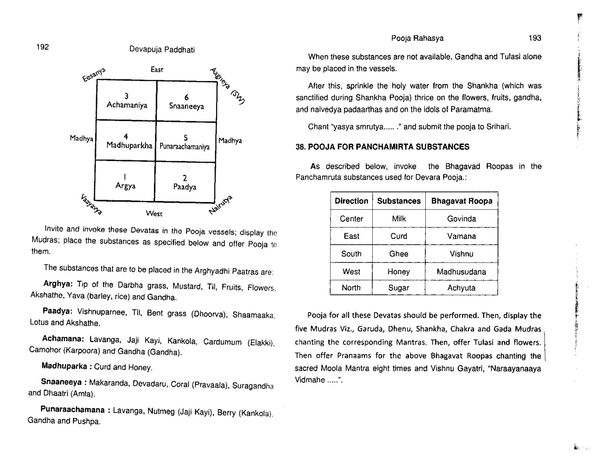
Arghyadi Pancha Patra Pooja (continuation)
39 · PDF p. 104 · printed p. 193 · Page image checked. English prose and six-vessel diagram; romanized Sanskrit spellings retained as visibly printed.
When these substances are not available, Gandha and Tulasi alone may be placed in the vessels.
After this, sprinkle the holy water from the Shankha (which was sanctified during Shankha Pooja) thrice on the flowers, fruits, gandha, and naivedya padaarthas and on the idols of Paramatma.
Chant “yasya smrutya.....” and submit the pooja to Srihari.
View the original PDF page image
39. PEETHA POOJA
41 · PDF p. 105 · printed p. 194 · Page image reviewed; uncertain text remains. English prose and table; diagram placement retained in linked scan.
39. PEETHA POOJA
We must first do pooja for the Peetha Devatas to invoke the Bimbaroopa Srihari in the pratimas for which we are performing the pooja.
The printed figure shows a four-legged peetha with West at the far side, South to the left, North to the right, and East near the worshipper. Its eight labeled foot and upper-foot forms are listed in the following passage; consult the page image for their precise placement in the figure.
The peetha (platform) has four legs. The two parts of the four legs are the lower part and the upper part. There is a broad “phalaka” (platform) on these legs.
Establish Paramatma for whom Pooja is performed in the center.
Vayu Deva and all other Gurus (Sanaka, Sananda, Sanatkumara, and Sanatsujata) are on the left side outside the peetha while all other Devatas stay on the right side of the Peetha. These Gurus are holding a book on one hand and are displaying the Vyakhyaana Mudra
Page-image detail: The diagram has partly obscured lettering; use the linked scan together with the complete directional table for exact placement.
View the original PDF page image
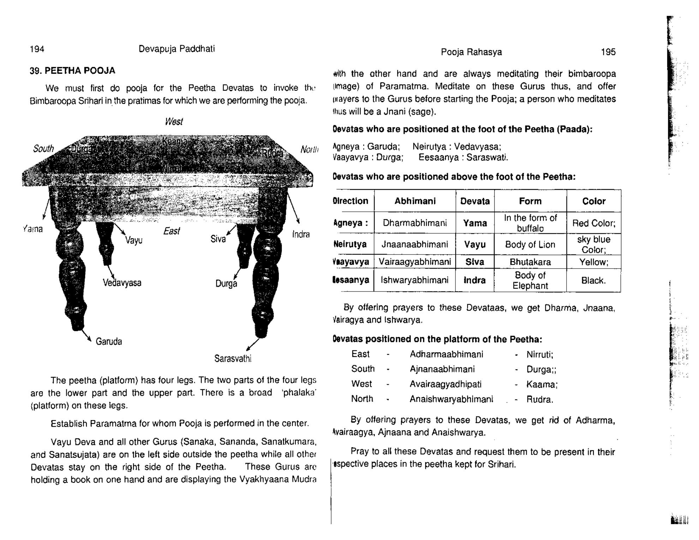
Peetha Pooja (continuation)
41 · PDF p. 105 · printed p. 195 · Page image reviewed; uncertain text remains. English prose and table; diagram placement retained in linked scan.
with the other hand and are always meditating their bimbaroopa (image) of Paramatma. Meditate on these Gurus thus, and offer prayers to the Gurus before starting the Pooja; a person who meditates thus will be a Jnani (sage).
Devatas who are positioned at the foot of the Peetha (Paada):
Agneya: Garuda; Neirutya: Vedavyasa;
Vaayavya: Durga; Eesaanya: Saraswati.
Devatas who are positioned above the foot of the Peetha:
Direction | Abhimani | Devata | Form | Color
Agneya | Dharmabhimani | Yama | In the form of buffalo | Red Color
Neirutya | Jnaanaabhimani | Vayu | Body of Lion | sky blue Color
Vaayavya | Vairaagyabhimani | Siva | Bhutakara | Yellow
Eesaanya | Ishwaryabhimani | Indra | Body of Elephant | Black
By offering prayers to these Devataas, we get Dharma, Jnaana, Vairagya and Ishwarya.
Devatas positioned on the platform of the Peetha:
East – Adharmaabhimani – Nirruti;
South – Ajnanaabhimani – Durga;
West – Avairaagyadhipati – Kaama;
North – Anaishwaryabhimani – Rudra.
By offering prayers to these Devatas, we get rid of Adharma, Avairaagya, Ajnaana and Anaishwarya.
Pray to all these Devatas and request them to be present in their respective places in the peetha kept for Srihari.
Page-image detail: The diagram has partly obscured lettering; use the linked scan together with the complete directional table for exact placement.
View the original PDF page image
Peetha Pooja (continuation)
41 · PDF p. 106 · printed p. 196 · Page image checked. English prose; quoted Sanskrit fragments retain the printed spelling and require independent Sanskrit verification.
Recall to mind and perform Pooja to all Devataas who are
present, one above the other, from underneath the Brahmaanda
(Universe) upto the Pooja peetha.
We live in Bhooloka. Below that are the seven Lokas
Underneath them is the Deluge (Pralaya Jala). Holding the Pralaya Jala
is the Brahmaanda Karpara which is like armor. Beyond this is Prutvi
tatva Aavarana (cover); Outside this there are other Aavaranaas which
are Water, Agni, Vaayu, Akaasa, Ahankaara, Mahat-tatva and the three
Gunas namely, Tamas, Rajas, and Satva (constituents of everything in
Nature or Prakruti) and are placed one outside the other; thus, the
second Aavarana (the outside Aavarana) is ten times more extensive
than the first one and so on (i.e. each of the outer Aavarana is 10 times
bigger than the inner Aavarana that immediately precedes it).
This entire Brahmanda and the seven Aavaranaas outside are
supported effortlessly by Parama Purusha Narayana who h;r',
inconceivable, boundless, incomprehensible, capacity and strength.
Above Him is the Aadhaara Shakti Ramaa Devi, who is dependent
on Sriman Narayana.
Above Lakshmi Devi is the Koorma Roopi Vishnu (Koorma
incarnation) holding the Brahmaanda (Universe). On the back of the
Koorma Roopi Vishnu is the Brahmanda Karpara.
Within the Brahmanda is the Pralaya Jala. ln that Pralaya Jala r',
the Koorma roopi Vishnu. Resting on the tail of Vishnu Koorma is
"Koorma roopi Vayu Deva".
Above the tail of Koorma Vayu is the thousand headed Sesha'
Deva, who has immense strength. On one of the thousand heads,
Prutvi comprising the fourteen lokas is positioned just like mustard
Presiding Devata for Prithvi is Dharaa Devi.
Above that is Varuna who is the Abhimani Devata for t]r,
Ksheerasagara (Ocean of milk). Above that is the Rama Roopi
Swetadweepa. A Mahamantapa made of Gold and fitted with precious
Navarathnas is there. Sri Devi taking the roopa of this mahamantapa r',
performing seva to Srihari.
View the original PDF page image
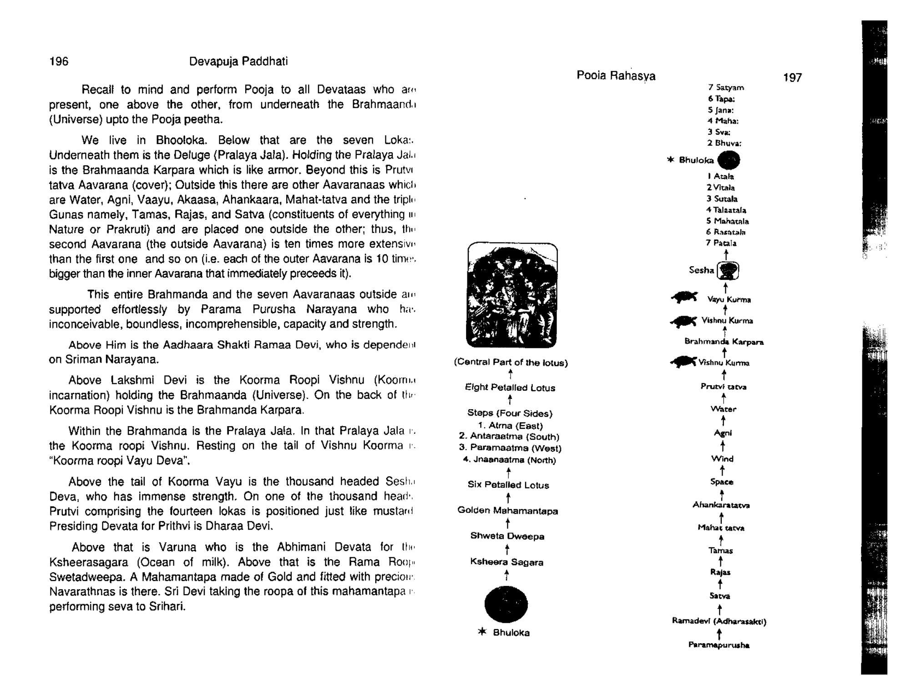
Peetha Pooja (continuation)
41 · PDF p. 106 · printed p. 197 · Page image checked. diagram transcription; spatial relationships remain available in the linked page image.
Diagram on printed p. 197 (read from bottom upward): Paramapurusha; Ramadevi (Adhaarashakti); Satva; Rajas; Tamas; Mahat tatva; Ahankaratatva; Space; Wind; Agni; Water; Prutvi tatva; Vishnu Kurma; Brahmanda Karpara; Vishnu Kurma; Vayu Kurma; Sesha; the seven lower lokas Patala, Rasatala, Mahatala, Talaatala, Sutala, Vitala, Atala; Bhuloka; the upper lokas Bhuva:, Sva:, Maha:, Jana:, Tapa:, Satya:.
The central peetha sequence shown beside it is: Ksheera Sagara; Shweta Dweepa; Golden Mahamantapa; Six Petalled Lotus; steps on four sides—Atma (East), Antaraatma (South), Paramaatma (West), Jnaanaatma (North); Eight Petalled Lotus; central part of the lotus.
View the original PDF page image
Peetha Pooja (continuation)
41 · PDF p. 107 · printed p. 198 · Page image checked. English prose; quoted Sanskrit fragments retain the printed spelling and require independent Sanskrit verification.
Within this mantapa there is a lotus; That is also Rama Devi. That
lotus has six - petals; three petals are in the front and three petals are
in the rear side.
ln the rear left petal is Sathvabhimani Sridevi; in the rear central
petal is Rajobhimani Bhudevi; and, in rear right petal is Tamobhimani
Durga Devi.
ln the front left petal is Surya; in the central petal is Chandra; and in
the right petal is Agni.
At the center of the above six-petalled lotus is an eight-petalled
lotus. Steps are there in all the four directions to climb to the elevated
eight-petalled lotus.
View the original PDF page image
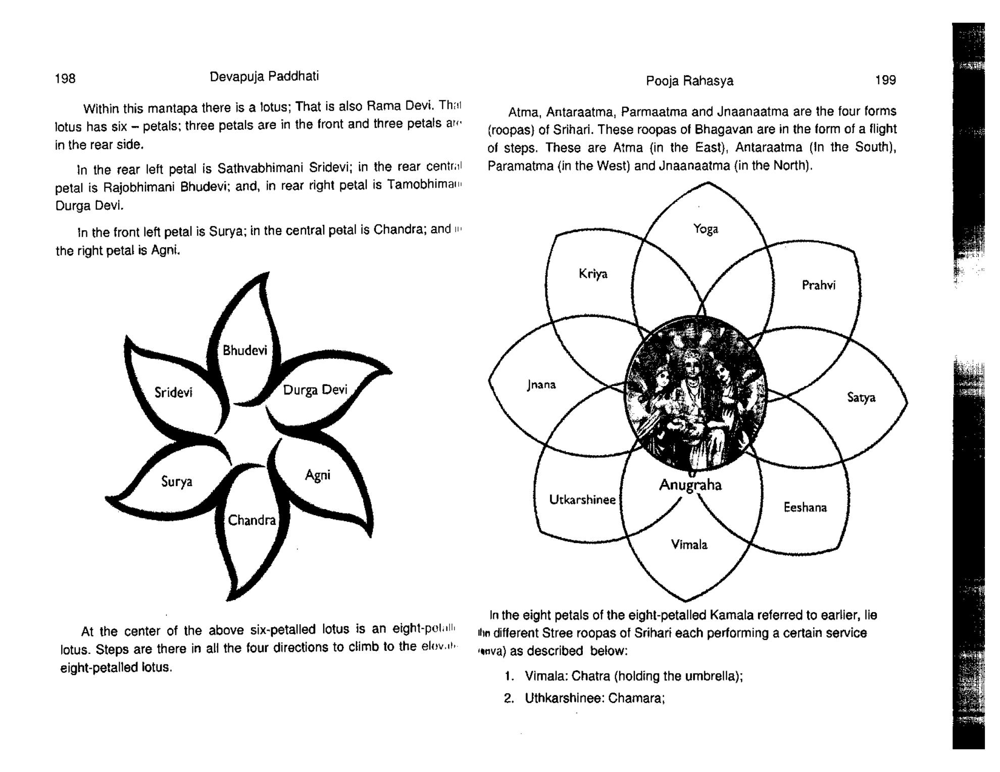
Peetha Pooja (continuation)
41 · PDF p. 107 · printed p. 199 · Page image checked. English prose; quoted Sanskrit fragments retain the printed spelling and require independent Sanskrit verification.
Rahasya
Pooja 199
Atma, Antaraatma, Paramatma and Jnaanaatma are the four forms
(roopas) of Srihari. These roopas of Bhagavan are in the form of a flight
of steps. These are Atma (in the East), Antaraatma (In the South),
Paramatma (in the West) and Jnaanaatma (in the North).
Utkarshinee
In the eight petals of the eight-petalled Kamala referred to earlier, lie
two different Stree roopas of Srihari each performing a certain service
seva) as described below:
1. Vimala: Chatra (holding the umbrella);
2.
Utkarshinee: Chamara;
View the original PDF page image
Hrudhyakamalavikasa (continuation)
42 · PDF p. 108 · printed p. 200 · Page image checked. English prose; quoted Sanskrit fragments retain the printed spelling and require independent Sanskrit verification.
Devapuja Paddhati
4
3. Jnana: Vyajana (Fan);
4. Kriya: Showing the mirror;
5. Yoga: Singing;
6. Prahvi: Dancing; o
7. Satya: Vadya;
8. Eeshana: Sthotra; and h
9. Anugraha: Stays in the central part of the lotus and offers thl B
d
service of these eight Roopas to Srihari.
m
Each of these nine Roopas has three Roopas; these are Ichcha, r
Jnana and Kriya. For example, for the Vimala Roopa these Roopa:,
respectively are Vimala lchcha, Vimala Jnana and Vimala Kriya and so
o
on for other Roopas also. Thus there are (9X3=27) Roopas. All thesu
Roopas are none else but Sri Hari Himself. (
(
Special phala is achieved when meditating the existence of all e
these Roopa Devataas thus.
After this, recollect and offer prayers to the Sesha Deva who i:,
adorned with divine gems and who is the personification of yogapeetha
on the Anugraha Devata. ln this Sesha Deva, Lakshmi Devi resides in
the form of woolen blanket studded with gems (Rathnakambala), cot,
bed and pillows. Paramatma is seated there.
Mentally remember all these Devatas who are present outside the
Brahmanda upto the Peetha of Srihari and offer prayers to them
Finally, invoke the indwelling Bimbaroopi Paramatma at the center of all
these peetha Devatas.
lnvoke all Devatas as described above and offer the salutations
(Upacaras) - Arghya, Paadya, Achamana, etc. with water.
Chant "yasya smrutya..... ." and submit the pooja to Srihari.
View the original PDF page image
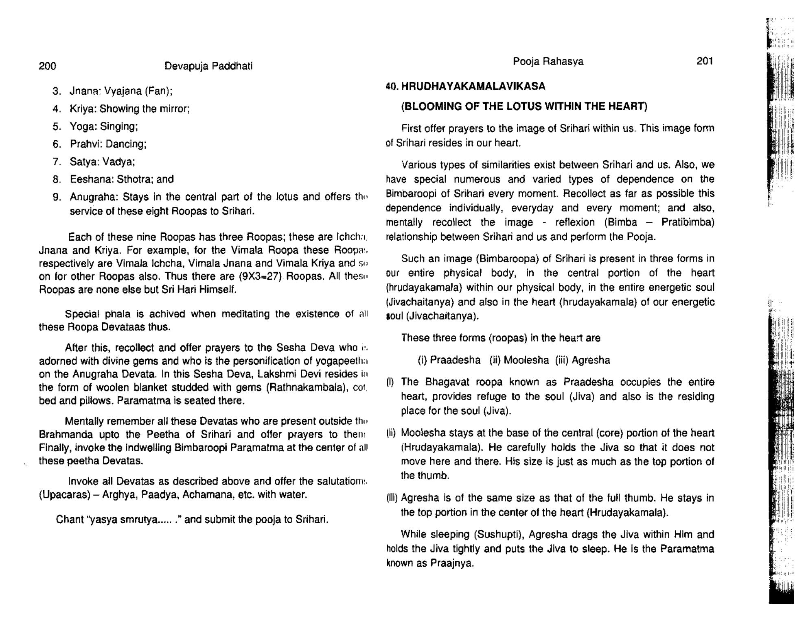
40. HRUDHAYAKAMALAVIKASA
42 · PDF p. 108 · printed p. 201 · Page image checked. English prose; quoted Sanskrit fragments retain the printed spelling and require independent Sanskrit verification.
40. HRUDHAYAKAMALAVIKASA
(BLOOMING OF THE LOTUS WITHIN THE HEART)
First offer prayers to the image of Srihari within us. This image form
of Srihari resides in our heart.
Various types of similarities exist between Srihari and us. Also, we
have special numerous and varied types of dependence on the
Bimbaroopi of Srihari every moment. Recollect as far as possible this
dependence individually, everyday and every moment; and also,
mentally recollect the image - reflection (Bimba Pratibimba)
relationship between Srihari and us and perform the Pooja.
Such an image (Bimbaroopa) of Srihari is present in three forms in
our entire physical body, in the central portion of the heart
(hrudayakamala) within our physical body, in the entire energetic soul
(Jivachaitanya) and also in the heart (hrudayakamala) of our energetic
soul (Jivachaitanya).
These three forms (roopas) in the heart are
(i) Praadesha (ii) Moolesha (iii) Agresha
(i) The Bhagavat roopa known as Praadesha occupies the entire
heart, provides refuge to the soul (Jiva) and also is the residing
place for the soul (Jiva).
(ii) Moolesha stays at the base of the central (core) portion of the heart
(Hrudayakamala). He carefully holds the Jiva so that it does not
move here and there. His size is just as much as the top portion of
the thumb.
(iii) Agresha is of the same size as that of the full thumb. He stays in
the top portion in the center of the heart (Hrudayakamala).
While sleeping (Sushupti), Agresha drags the Jiva within Him and
holds the Jiva tightly and puts the Jiva to sleep. He is the Paramatma
known as Praajnya.
View the original PDF page image
Hrudhyakamalavikasa; Bimbaroopa Dhyana and Avahana (continuation)
42–43 · PDF p. 109 · printed p. 202 · Page image checked. English prose; quoted Sanskrit fragments retain the printed spelling and require independent Sanskrit verification.
"" ," , . -
JW
Jiva wakes up only when he comes out of Praajnya (Agresha).
Praajnyaroopa Paramatma, known as Agresha, is in our heart
(Hrudayakamala). We invoke Him in the idols. Meditate on this form of
Bhagavan, perform pooja once within the heart and invoke Him in the
idols. When we perform Pooja to the idols belonging to someone else,
we must invoke Suryantargata Narayana in the idols and then do thl
Pooja.
First, meditate upon this image of Srihari (Bimbamurti) within us
The abode for this Bimbamurthi is the Hrudayakamala. This
Bimbaroopa is unique for each one of us. To invoke this Bimbaroopa in
the idols outside, the lotus within our heart (hrudayakamala) should first
be made to bloom.
This lotus in the heart (Hrudayakamala) is in an upside down form
The tip of the lotus petals (Kamaladala) is slightly bent. Chant the Vayu
Beejakshara "Yam" and make this Hrudayakamala stand upright; then,
Chant the "Omkaara" and lift the front part of the bent lotus petals.
Knowledge (Jnaana) that Srihari is supreme in the form of Sun makes
this lotus bloom.
After this think, once again that all the Peethadevatas referred to
earlier are present in the lotus and offer salutations (Pranaams) to the
magnificent Bimbamurthy who resides above all these
peethadevatahas..
There is an eight petalled lotus in our heart. Surya Mandala,
Chandra Mandala and the Agni (Vahni) mandala are located one above
the other in that lotus.
There is a peetha. On that peetha, imagine that the majestic Srihari
(Bimbamurthy) is present above Sesha and meditate on Him starting
from foot (Paada) up to the crown on the head.
i*
View the original PDF page image
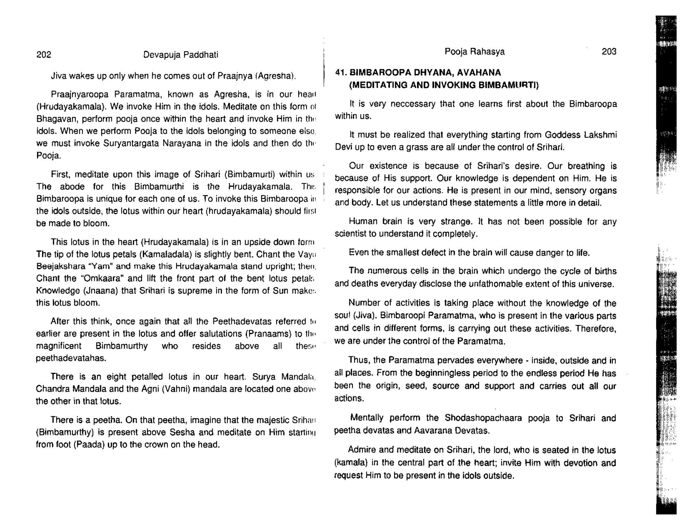
Hrudhyakamalavikasa; Bimbaroopa Dhyana and Avahana (continuation)
42–43 · PDF p. 109 · printed p. 203 · Page image checked. English prose; quoted Sanskrit fragments retain the printed spelling and require independent Sanskrit verification.
Pooja Rahasya
41. BIMBAROOPA DHYANA, AVAHANA
(MEDITATING AND INVOKING BIBAMURTI)
It is very necessary that one learns first about the Bimbaroopa
within us.
It must be realized that everything starting from Goddess Lakshmi
Devi up to even a grass are all under the control of Srihari.
Our existence is because of Srihari's desire. Our breathing is
because of His support. Our knowledge is dependent on Him. He is
responsible for our actions. He is present in our mind, sensory organs
and body. Let us understand these statements a little more in detail.
Human brain is very strange. It has not been possible for any
scientist to understand it completely.
Even the smallest defect in the brain will cause danger to life.
The numerous cells in the brain which undergo the cycle of births
and deaths every day disclose the unfathomable extent of this universe.
A number of activities are taking place without the knowledge of the
soul (Jiva). Bimbaroopi Paramatma, who is present in the various parts
and cells in different forms, is carrying out these activities. Therefore,
we are under the control of the Paramatma.
Thus, the Paramatma pervades everywhere - inside, outside and in
all places. From the beginningless period to the endless period He has
been the origin, seed, source and support and carries out all our
actions.
Mentally perform the Shodashopachaara pooja to Srihari and
peetha devatas and Aavarana Devatas.
Admire and meditate on Srihari, the lord, who is seated in the lotus
(kamala) in the central part of the heart; invite Him with devotion and
request Him to be present in the idols outside.
*
View the original PDF page image
Bimbaroopa Dhyana and Avahana (continuation)
43 · PDF p. 110 · printed p. 204 · Page image checked. English prose; quoted Sanskrit fragments retain the printed spelling and require independent Sanskrit verification.
"Oh. Bimba Deva! I invite you to come and be present in the idols irr
the Peetha. "Oh! Srihari! Please come out and manifest yourself in llr,,
o
Pratima".
T
Thus pleading, lead Srihari from the heart (Hrudaya)
t,,
(
Brahmaranddhra (Spiritual center at the top of the head) passing
through the Sushumna Naadi; (spinal cord); then, request Srihari to
come down through the left nostril when we exhale and occupy His
position in the Tulasi and flowers placed in the Anjali.
Perform Shodashopacara Pooja to Srihari who is now present in the
Tulasi and flowers in the hands chanting "Arghyam Samarpayami" l
Place the Tulasi and flowers on the idols and imagine that Srihari in
Tulasi has entered the idols.
f
The idols for which we are performing the pooja are made up of
metal. lt should be understood that within this idol is the bright and
shining idol carved by Viswakarma. t
lnvoke Srihari in the idol.
P
Chant the shloka "udhyad raviprakara....." and meditate upon Vayu
a
Deva and invoke him in the Vishnu pratima. Here Vayu Deva is the firsr
golaka.
Chant the shloka "Kausheyapethavasanaam " and meditate upon A
Mahalakshmi Devi and invoke her in the Vayu golaka. Here, Lakshmi
Devi is the second golaka.
chant the shloka "udhyad bhasvat samaabhasa:..." and meditate
S
upon Srihari; invoke Srihari who is residing in our Hrudayakamala in the
Lakshmi golaka.
B
Srihari is swatantra (independent) Superior to all (Sarvottama).
B
It should not be misunderstood that Sri Hari is not already present
I
in the idols. Srihari, is present everywhere; therefore, he is already
I
Il
i
I
I
View the original PDF page image
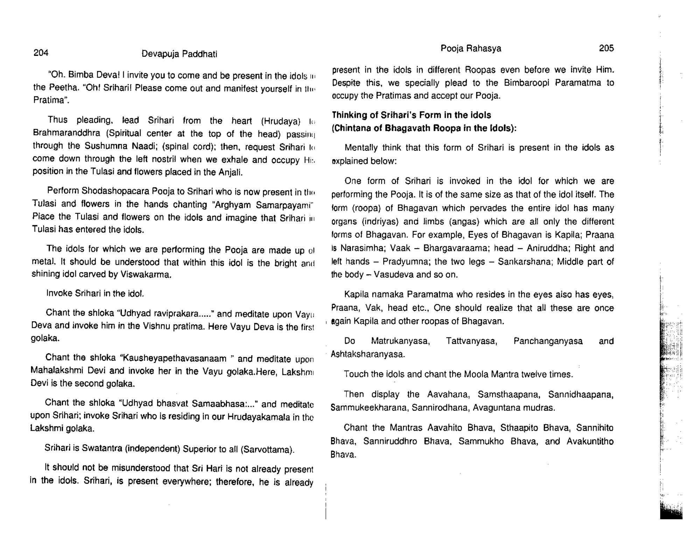
Bimbaroopa Dhyana and Avahana (continuation)
43 · PDF p. 110 · printed p. 205 · Page image checked. English prose; quoted Sanskrit fragments retain the printed spelling and require independent Sanskrit verification.
llfl|||i|||i||||ll||iii|lll]ll]l]l]]]lflxfl[f,Iflflffi[l
I
present in the idols in different Roopas even before we invite Him. I
Despite this, we specially plead to the Bimbaroopi Paramatma to
flril
occupy the Pratimas and accept our Pooja.
Thinking of Srihari's Form in the idols
(Chintana of Bhagavath Roopa in the ldols):
Mentally think that this form of Srihari is present in the idols as
explained below:
One form of Srihari is invoked in the idol for which we are
performing the Pooja. lt is of the same size as that of the idol itself. The
form (roopa) of Bhagavan which pervades the entire idol has many
organs (indriyas) and limbs (angas) which are all only the different
forms of Bhagavan. For example, Eyes of Bhagavan is Kapila; Praana
is Narasimha; Vaak - Bhargavaraama; head - Aniruddha; Right and
left hands - Pradyumna; the two legs - Sankarshana; Middle part of
the body - Vasudeva and so on.
Kapila namaka Paramatma who resides in the eyes also has eyes,
Praana, Vak, head etc., One should realize that all these are once
again Kapila and other roopas of Bhagavan.
Do
Matrukanyasa, Tattvanyasa, Panchanganyasa and
Ashtaksharanyasa.
Touch the idols and chant the Moola Mantra twelve times.
Then display the Aavahana, Samsthaapana, Sannidhaapana,
Sammukeekharana, Sannirodhana, Avaguntana mudras.
Chant the Mantras Aavahito Bhava, Sthaapito Bhava, Sannihito
Bhava, Sanniruddho Bhava, Sammukho Bhava, and Avakuntitho
Bhava.
View the original PDF page image
42. ABHISHEKA VIDHI
44 · PDF p. 111 · printed p. 206 · Page image checked. English prose; quoted Sanskrit fragments retain the printed spelling and require independent Sanskrit verification.
42. ABHISHEKA VIDHI
A
Mentally think that the weapons such as Chakra etc and various
t
ornaments adorn Srihari; Offer prayers to them and slowly remove
them. Then, pray to Srihari "Hey Swaminl Please come to the place
where I can carry out your Snaana". Then chant the mantra "Idham
Vishnurvichakrame...." and put on the Golden Sandals to Him. P
Perform the upachaaras with Chatra, Chamara, and other grand
services, hold His Hands and lead Him to the Snaana peetha and make N
Him sit there; chant the mantra "Bhadram Karnebhi.....". i
Again display the six mudras starting with the Aavahana Mudra
Then, wash His hands and legs with holy mud (Mrutika Shoucham); offer N
Him water to gargle (Gandoosha), to clean His teeth (dantadhaavana) M
and to wash His face (Mukhaprakshalana). For this purpose pour water
in the Pela with Uddharani chanting the Narayana Mantra.
N
Then, think that Vayu Deva serves Srihari by holding the umbrella P
(Chatra), bushy fan (Chaamara), showing the mirror (Darpana) and P
offering seat. For this purpoie chant Narayana Mantra and offer Tulasi
to idols of Srihari or pour water exclusively in the pela.
N
Likewise, think that Goddess Ramaa Devi combs His hair with her S
own hands, massages oil to His hands, legs with oil, and applies
1
scented oil with Kasthuri and other such scented powders for oil bath,
gives bath with hot water from a golden vessel. For this purpose, offer
Tulasi dala. t
Earlier (in Section 37) "Arghyaadi Pancha Paatra Pooja" has been
performed. Using the water from those vessels, offer Arghya and other
services (Sevas) to Srihari.
Then, think that the Devatas as described below are offering
services and the upachaaraas:
lmagine that Arghya is offered by Lakshmi Devi. Chant the
Narayana mantra and "Apohishta mayo Bhuva....."; take the Paatra with
water for Arghya, touch the Shankha and offer Arghya to Srihari.
i
l_
View the original PDF page image
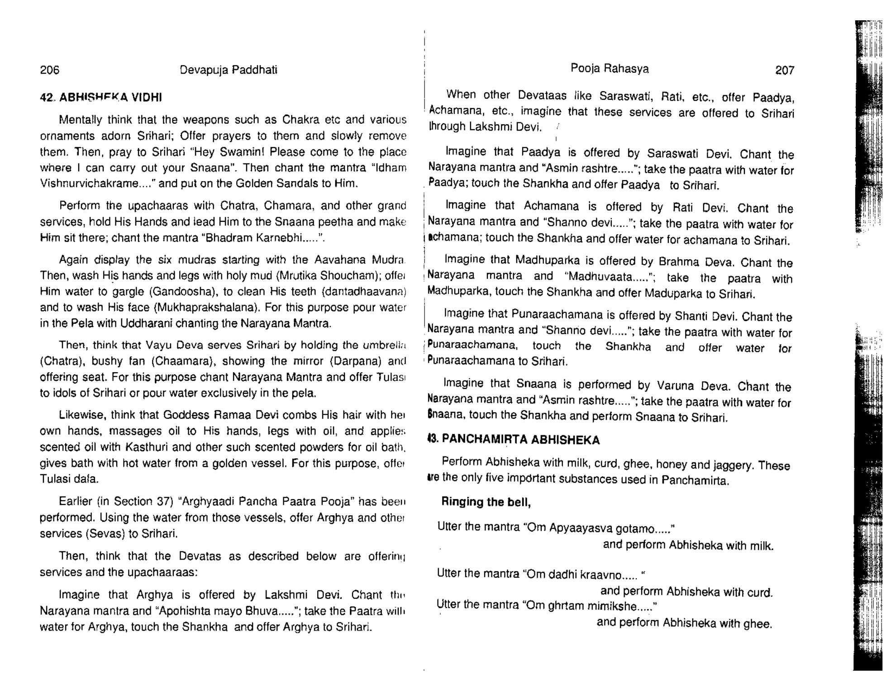
Abhisheka Vidhi (continuation)
44 · PDF p. 111 · printed p. 207 · Page image checked. English prose; quoted Sanskrit fragments retain the printed spelling and require independent Sanskrit verification.
Pooja Rahasya 207
When other Devataas like Saraswati, Rati, etc., offer Paadya,
Achamana, etc., imagine that these services are offered to Srihari
through Lakshmi Devi.
(
Imagine that Paadya is offered by Saraswati Devi. Chant the
Narayana mantra and "Asmin rashtre....."; take the Paatra with water for
Paadya; touch the Shankha and offer Paadya to Srihari.
Imagine that Achamana is offered by Rati Devi. Chant the
Narayana mantra and "shanno devi....."; take the Paatra with water for
Achamana; touch the Shankha and offer water for Achamana to Srihari.
Imagine that Madhuparka is offered by Brahma Deva. Chant the
Narayana mantra and ,'Madhuvaata,...."; take the Paatra
with
Madhuparka, touch the Shankha and offer Madhuparka to Srihari.
Imagine that PunaraAchamana is offered by Shanti Devi. Chant the
Narayana mantra and "Shanno devi....."; take the Paatra with water for
PunaraAchamana, touch the Shankha and offer water
for
PunaraAchamana to Srihari.
Imagine that Snaana is performed by Varuna Deva. Chant the
Narayana mantra and "Asmin rashtre.....,,; take the Paatra with water for
Snaana, touch the Shankha and perform Snaana to Srihari.
View the original PDF page image
44. SUDDHAJALA ABHISHEKA
45–46 · PDF p. 112 · printed p. 208 · Page image checked. English prose; quoted Sanskrit fragments retain the printed spelling and require independent Sanskrit verification.
44. SUDDHAJALA ABHISHEKA
After performing Panchaamruta Abhisheka, perform Suddhodhaka
snaana with Shankha filled with kalasha water simultaneously ringing
the bell (Ghante). At that time, chant Purusha Sukta. Abhisheka should
not be performed without chanting Purusha Sukta. Only when
Abhisheka is performed chanting Purusha Sukta it becomes teertha
When time permits, chant Vishnu Sukta, Gharma Sukta, Samudra
Sukta, Aatvaahaarsha Sukta, and Vishvakarma Sukta; also, chant
Pavamaana Sukta; at least, the three vargas starting with "pavasva",
one varga of "Ya Indho" should be chanted. Abhisheka should be
performed chanting "Jithanthe" Stotra "Suvarna Parmaanuvak", B
"Narayana varma", "Brahma Sutra", "Ashta Mahamantra" ancl r
"Anubhashya".
View the original PDF page image
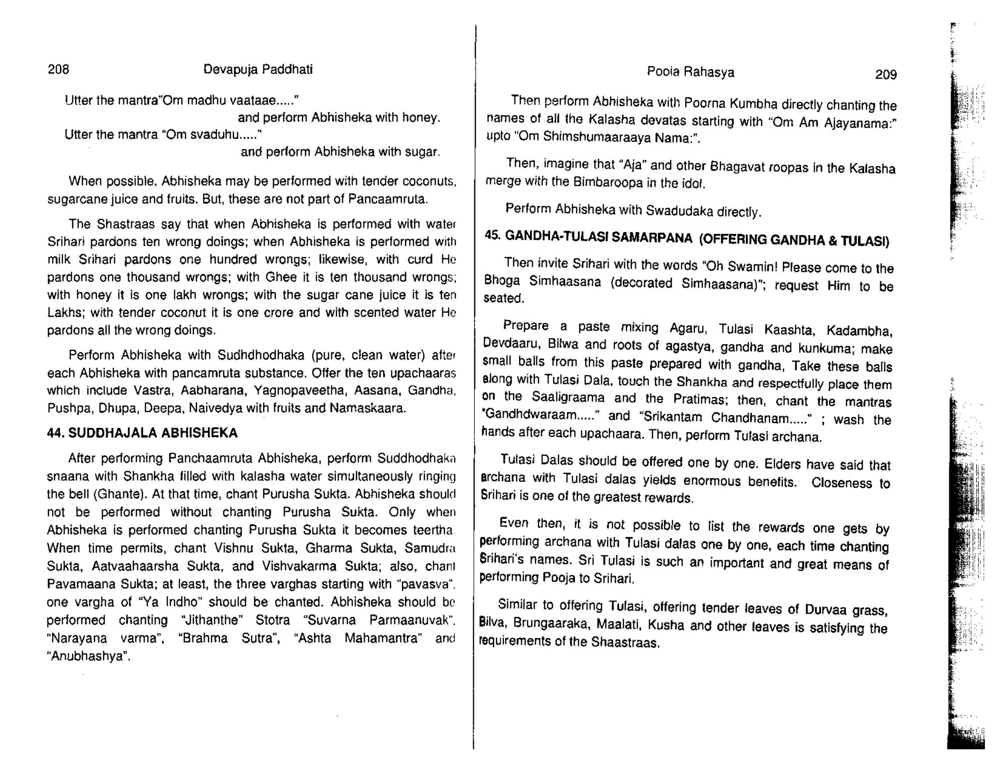
Panchamrita Abhisheka; Suddha Jala Abhisheka (continuation)
45–46 · PDF p. 112 · printed p. 209 · Page image checked. English prose; quoted Sanskrit fragments retain the printed spelling and require independent Sanskrit verification.
Rahasya
Pooia
2Og
Then perform Abhisheka with Poorna Kumbha directly chanting the
names of all the Kalasha devatas starting with "Om Am Ajaaya Nama:"
upto "Om Shimshumaaraaya Nama:".
Then, imagine that "Aja" and other Bhagavat roopas in the Kalasha
merge with the Bimbaroopa in the idol.
Perform Abhisheka with Swadudaka directly.
45. GANDHA-TULASI SAMARPANA (OFFERING GANDHA & TULASI)
Then invite Srihari with the words "Oh Swamin! Please come to the
Bhoga Simhaasana (decorated Simhaasana)"; request Him to be
seated.
Prepare a paste mixing Agaru, Tulasi Kaashta, Kadambha,
Devdaaru, Bilva and roots of Agastya, gandha and kunkuma; make
small balls from this paste prepared with gandha. Take these balls
along with Tulasi Dala, touch the Shankha and respectfully place them
on the Saaligraama and the pratimas; then, chant the mantras
"Gandhdwaaraam....." and "Srikantam Chandhanam.....,, ; wash the
hands after each upachaara. Then, perform Tulasi archana.
Tulasi Dalas should be offered one by one. Elders have said that
archana with Tulasi dalas yields enormous benefits. Ctoseness to
Srihari is one of the greatest rewards.
Even then, it is not possible to list the rewards one gets by
performing archana with Tulasi dalas one by one, each time chanting
Srihari's names. Sri Tulasi is such an important and great means of
performing Pooja to Srihari.
Similar to offering Tulasi, offering tender leaves of Durvaa grass,
Bilva, Brungaaraka, Maalati, Kusha and other leaves is satisfying the
requirements of the Shaastraas.
View the original PDF page image
Gandha Tulasi Samarpana (continuation)
47 · PDF p. 113 · printed p. 210 · Page image checked. English prose and weapons table; Sanskrit names retain printed spelling.
As a result of performing Pooja with tender Durva leaves, Srihari bestows on us the reward one would get by performing all the Yagnas. For this reason, one should offer tender Durva leaves.
One who submits Bilva grass will be respected after salvation. Hence, one should offer Bilva leaves.
Even if one offers Shami leaves without knowing it, there is no doubt that Srihari would bless him with the highest state.
By performing Pooja with Brungaaraj leaves to Srihari, he will be free of all diseases in old age and will attain Mukti.
By offering garland to Srihari, it is certain that one begets gains of food.
Chant the Keshavaadi twenty four Names, the Mathsyaadi ten Names (Dasaavathaara Naamaas), Narayanadi hundred names, Vishnu Sahasra Naama and Brahma Sutra. The phala as a result of performing Tulasi Archana is immense.
46. POOJA FOR SRIHARI'S WEAPONS AND ORNAMENTS
Perform Pooja to the weapons and ornaments of Srihari and their presiding deities.
| WEAPON | PRESIDING DEITIES |
| --- | --- |
| Chakra | Durga |
| Shankha | Sridevi |
| Gada | Vayu |
| Padma | Bhoodevi |
| Sword | Durga |
| Bow | Saraswati |
| The five Arrows | The Pancha Praanaas of Mukhya praana which are Praana, Apaana, Vyaana, Udaana, Samaana. |
View the original PDF page image
Gandha Tulasi Samarpana (continuation)
47 · PDF p. 113 · printed p. 211 · Page image checked. English prose and ornaments table; the following-page Aavarana table is not part of this record.
| ORNAMENTS | PRESIDING DEITIES |
| --- | --- |
| Kaustubha mani | Brahma |
| Vana Maala | Sridevi |
| Srivatsa | Sri |
Mentally decorate Srihari with all these weapons and ornaments.
Srihari Himself is in the form chakra and other weapons. They are supremely spiritual weapons.
Bhagavan who is in these weapons destroys independently all the enemies by Himself. Rama Devi in the supremely spiritual form is in these weapons. Various different presiding Devatas are present in the other inanimate weapons.
Bhagavan is with Chakra and other weapons. These are all splendorous weapons.
47. AAVARANA DEVATA AAVAHANA, POOJA
(INVOKING THE PRESIDING DEITIES)
The presiding deities should be invoked around Srihari by chanting their names. Srihari is in the center; to the left of Bhagavan is Sridevi; and to the right of Sri Hari is Bhudevi; positions of other Devataas are shown in the Table given in the next page.
Invoke and meditate upon these Aavarana devatas who are facing the God and offer them separately Arghya, Paadya, Achamana, Madhuparka, Punarachamana, Snaana, Vastra, Vibhushana, Upaveeta, Aasana, Gandha and Flowers. For this purpose pour water in the Pela with Uddharini.
View the original PDF page image
Aavarana Devata Avahana and Pooja (continuation)
48 · PDF p. 114 · printed p. 212 · Page image checked. āvaraṇa placement table; Roman names are transcribed from the printed table.
POSITIONS OF ĀVARAṆA DEVATĀS (printed p. 212)
Śrīhari at the center; Śrīdevī to His left; Bhūdevī to His right.
The table gives directional rows and six successive positions/rings:
Direction | Śrīdevī-side fire form | supporting form | Śrīhari forms | Bhūdevī-side form(s) | inner attendant | outer direction deity
East | Kruddholka | Vāsudeva | Keśava; Nārāyaṇa | Matsya; Kūrma | Brahmā | Indra
Southeast (Āgneya) | Sahasrolka | Māyā | Mādhava | Varāha | Sarasvatī | Agni
South | Maholka | Saṅkarṣaṇa | Govinda; Viṣṇu | Narasiṃha; Vāmana | Vāyu | Yama
Southwest (Nairṛtya) | Sahasrolka | Jaya | Madhusūdana | Bhārgava | Bhāratī | Nirṛti
West | Vīrolka | Pradyumna | Trivikrama; Vāmana | Rāma; Kṛṣṇa | Śeṣa (Ananta) | Varuṇa
Northwest (Vāyavya) | Sahasrolka | Kṛti | Śrīdhara | Buddha | Vāruṇī | Vāyu
North | Dyulka | Aniruddha | Hṛṣīkeśa; Padmanābha | Kalki; Ananta | Rudra | Soma
Northeast (Īśānya) | Sahasrolka | Śānti | Dāmodara | Viśvarūpa | Pārvatī | Īśāna
The printed diagram is retained below as a page image for exact positions and spellings.
Page-image detail: Verified printed p. 212 table: it gives the eight directions, six aavarana positions/rings, and the Sri, Srihari and Bhu-side devata placements.
View the original PDF page image
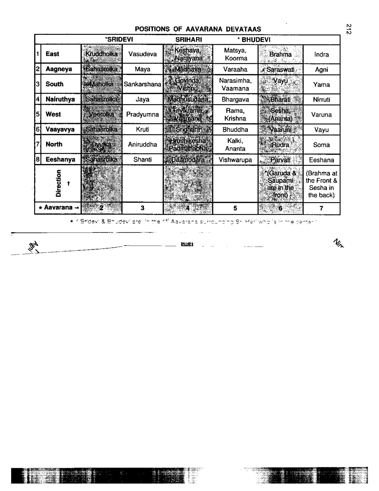
Aavarana Devata Avahana and Pooja (continuation)
48 · PDF p. 115 · printed p. 212-A · Page image checked. āvaraṇa concentric diagram summary; exact placement names remain in the preceding verified table.
CONCENTRIC ĀVARAṆA DIAGRAM (printed p. 212-A)
The image centers ŚRĪHARI with ŚRĪDEVĪ and BHŪDEVĪ immediately below/alongside Him. Seven rectangular surrounding rings place the fire forms, Vāsudeva–Aniruddha forms, Keśava–Dāmodara forms, avatāra pairs, attendant devatās and directional deities in the eight directions. The complete names for each direction are transcribed in the preceding table passage (R114L-01). The scan below preserves their exact geometric placement.
Page-image detail: Verified printed p. 212-A concentric diagram: Srihari is central with Sridevi and Bhudevi; rings extend through the named forms and directional devatas.
View the original PDF page image
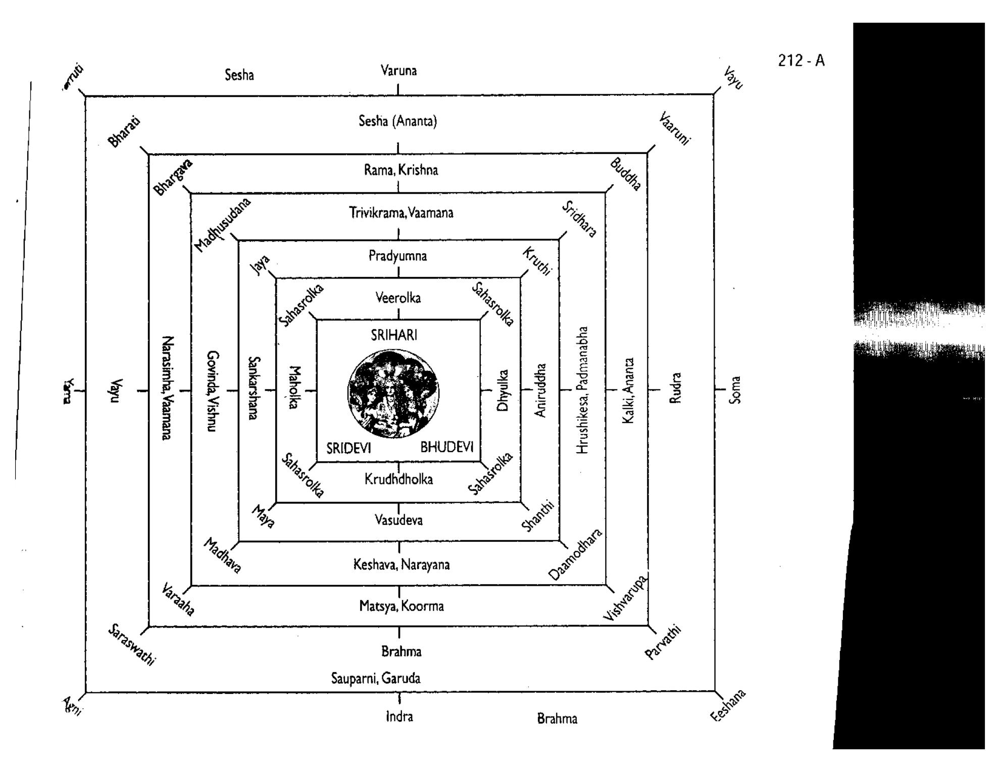
48 DHUPA AND DEEPA
48–49 · PDF p. 116 · printed p. 213 · Page image checked. English prose; abbreviated Sanskrit/mantra forms retain the printed spelling and require independent Sanskrit verification.
48 DHUPA AND DEEPA
Show Dhupa Aarathi to Narayana along with all the Peethaavarana
Devatas. This Dhupa has 10 components; these are Gandha, Agaru,
Karpoora, Devadaru, guggula, Jaji pala, Vilva (Kungiliya), Usheera
(Vetiver - fragrant root of a plant), Koshtam and Saalaniryaasa. Cow's
ghee should be added to the dhupa.
Dhupaarati to God should not be performed by blowing air using the
hands or cloth or blowing through the mouth. Dhupaarati should be
held in the hand; and if necessary air should be blown through a hand
fan.
It is necessary to ring the bell while showing Dhupaarati. When one
perceives Srihari with full devotion, crores of generations of his lineage
will prosper.
Although we smell the pleasant scent of dhupa, it is not affected
and does not become Nirmalya.
Perform Ekaarathi with three cotton wicks (Trivarthi) soaked in
ghee. This Ekaarathi should be shown three and a half times from foot
to head and then the wicks are put off. Otherwise, Daityas will take
away benefits of performing the Aarati.
49. NAIVEDYA
:
, On Ekadasi days only fruits and coconut or milk should be offered as
Naivedya; Any item which is fried, baked or cooked should not be used for
Naivedya. The Naivedya offered to Srihari on the Ekadasi day is to be
offered again as Naivedya to Lakshmi Devi on the Dwadasi day.
Clean the place in front of the God and wipe the place with
cowdung. Make a square figure (mandala) and write the Beejakshara
"Om" on the mandala. lf Mandala is not made Daityas will take
away the Naivedya.
View the original PDF page image
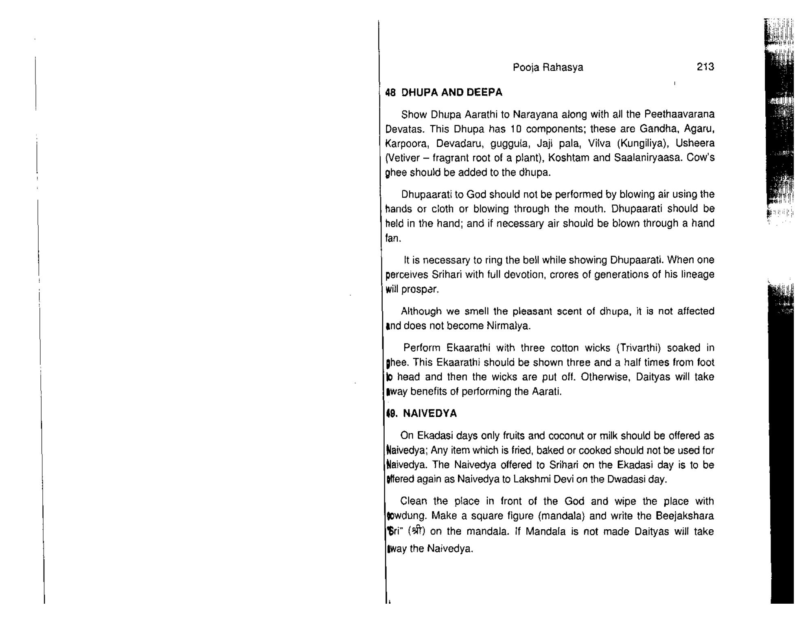
Naivedya (continuation)
49 · PDF p. 117 · printed p. 214 · Page image checked. English prose; the printed food-placement diagram remains in the linked source image.
Devapuja Paddhati
214
On the square mandala place a three legged peetha; if a three
legged peetha is not available, place three flowers and above this
place a plaintain leaf and when possible a golden plate or a silver plate
may be placed above that' t
srihari will be very pleased when Naivedya is performed with gold,
silver, bronze, or mud vessels or lotus leaves'
First, pour a little ghee on the leaf or plate (Paathraabhighaara).'First,
rice, then salt and pickles are Served; then serve the four types of foorl
namely, Lehya (capable of being licked), Peya (drinkables), Choshya
(suckables),Khadya(capableofeatingafterbiting).
Ite
Then, six types of rice varieties such as Paramaannam (Payasal Sh
Haridhraana (lemon rice), Kevallanna (simplv
Chitraanna Furiyodara),
rice - white rice), Huggi (Venn pongal) Gudodana (rice with jaggery)
P
are served.
by
North East East
ch
's
lil
Water A
i
po
h
M
IN
Side Dishes
SouthWest
NorthWest West
View the original PDF page image
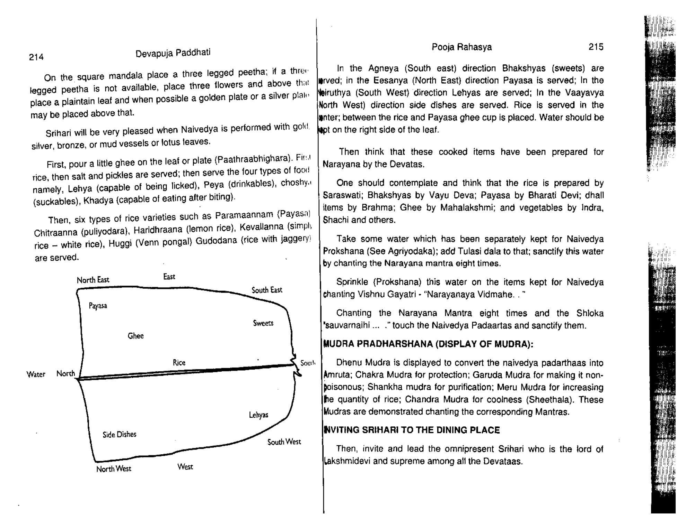
Naivedya (continuation)
49 · PDF p. 117 · printed p. 215 · Page image checked. English prose; abbreviated Sanskrit/mantra forms retain the printed spelling and require independent Sanskrit verification.
In the Agneya (South east) direction Bhakshyas (sweets) are
; in the Eesanya (North East) direction Payasa is serued; In the
Nairutya (Sout(North West) direction Lehyas are served; In the Vaayavya
(North West) direction side dishes are served. Rice is served in the
center; between the rice and Payasa ghee cup is placed. Water should be
placed on the right side of the leaf.
Then think that these cooked items have been prepared for
Narayana by the Devatas.
One should contemplate and think that the rice is prepared by
Saraswati; Bhakshyas by Vayu Deva; Payasa by Bharati Devi; dhall
items by Brahma; Ghee by Mahalakshmi; and vegetables by Indra,
Shachi and others.
Take some water which has been separately kept for Naivedya
Prokshana (See Agriyodaka); add Tulasi dala to that; sanctify this water
by cchanting the Narayana mantra eight times.
Sprinkle (Prokshana) this water on the items kept for Naivedya
chanting Vishnu Gayatri - "Narayanaya Vidmahe. . "
Cchanting the Narayana Mantra eight times and the Shloka
sauvarnaihi ... ." touch the Naivedya Padaartas and sanctify thern.
MUDRA PRADHARSHANA (DrSpLAy OF MUDRA):
Dhenu Mudra is displayed to convert the naivedya padarthaas into
Amruta; Chakra Mudra for protection; Garuda Mudra for making it non-
oisonous; Shankha mudra for purification; Meru Mudra for increasing
the quantity of rice; Chandra Mudra for coolness (Sheethala). These
Mudras are demonstrated cchanting the corresponding Mantras.
INVITING SRIHARI TO THE DINING PLACE
Then, invite and lead the omnipresent Srihari who is the lord of
Sridevi and supreme among all the Devataas.
View the original PDF page image
Naivedya (continuation)
49 · PDF p. 118 · printed p. 216 · Page image checked. English prose; abbreviated Sanskrit/mantra forms retain the printed spelling and require independent Sanskrit verification.
Offer golden sandals embedded with precious stones (Ratnas)
Mentally, offer handshake (Karavalambana) to Srihari who is seated on
the throne.
Devataas hold umbrella, swing the Chamara, blow air with Vyajana
(a type of hand fan) and are serving Srihari.
Reverberating proclamations are made before Srihari to the effect
(
that "let there be victory to the Lord of the Lords! Let there be victory to
the Lord of Sridevil Let there be victory to the omnipresent Srihari."
B
Rows and rows of torches are held by Devataas. On the sides,
pillars of diamonds (Ratna Stambha) are shining. Carpets studded with
Rubies are spread. Tender Thoranas (festoons) are tied and the arches P
are decorated. S
The whole area is filled with pleasant smell f rom flowers and
pleasing fragrance from dhupa which is enjoyable to heart. E
E
Apsara ladies are dancing nearby.The sporting gestures of the
l
different Avataaraas of Srihari are portrayed vividly with action and
emotion.
Some Gandharvaas are singing. Some others are beating the five
V
types musical instruments and are serving Srihari.
p
Srihari has been invited and brought to the dining place. The floor in
f
the dining place is made of gold. lt has walls of crystals, diamond
pillars, steps made of Gems (Rathna); windows are made of vaidurya
(Opal - a precious stone); doors are made of Maanikya (Ruby); the
thresholds (doorstep) are made of corals; the divine pedestal is broad
and made of gold
The pillars are tied with banana trees. Bananas, wood apple, jambu
fruits, mangoes and grapes are hung in bunches. The thoranas are
made of tender green leaves. Pleasant smelling flowers are sprayed all
over the ground; flower garlands are tied to the walls and pillars; This mantapa has four pillars of gold; they are full of Rathnas and are
View the original PDF page image
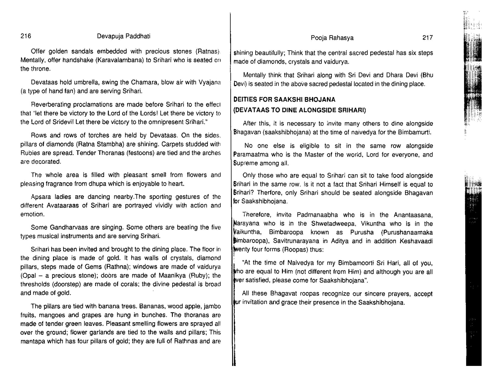
Naivedya (continuation)
49 · PDF p. 118 · printed p. 217 · Page image checked. English prose; abbreviated Sanskrit/mantra forms retain the printed spelling and require independent Sanskrit verification.
shining beautifully; Think that the central sacred pedestal has six steps
made of diamonds, crystals and vaidurya.
Mentally think that Srihari along with Sri Devi and Dhaaraa Devi (Bhu
Devi) is seated in the above sacred pedestal located in the dining place.
DEITIES FOR SAAKSHI BHOJANA
(DEVATAAS TO DtNE AI-ONGS|DE SR|HARI)
After this, it is necessary to invite many others to dine alongside
Bhagavan (saakshibhojana) at the time of naivedya for the Bimbamurti.
No one else is eligible to sit in the same row alongside
Paramaatma who is the Master of the world, Lord for everyone, and
Supreme among all.
Only those who are equal to Srihari can sit to take food alongside
Srihari in the same row. ls it not a fact that Srihari Himself is equal to
Srihari? Therefore, only Srihari should be seated alongside Bhagavan
lor Saakshibhojana.
Therefore, invite Padmanaabha who is in the Anantaasana,
Narayana who is in the Shwetadweepa, Vaikuntha who is in the
Vaikuntha, Bimbaroopa known as Purusha (Purushanaamaka
Bimbaroopa;, Savitrunarayana in Aditya and in addition Keshavaadi
twenty four forms (Roopas) thus:
fwenty
"At the time of Naivedya for my Bimbamoorti Sri Hari, all of you,
are equal to Him (not different from Him) and although you are all
satisfied, please come for Saakshibhojana".
All these Bhagavat roopas recognize our sincere prayers, accept
our invitation and grace their presence in the Saakshibhojana.
View the original PDF page image
Naivedya (continuation)
49 · PDF p. 119 · printed p. 218 · Page image checked. English prose; abbreviated Sanskrit/mantra forms retain the printed spelling and require independent Sanskrit verification.
ASANA PAATRA VINYAASA
(ARANGING THE SEATS AND LEAVES FOR DINING)
All these Devataas should be seated in the following order:
There is prominent (Pradhaana) seat above the pedestal (Vedika);
there are twelve seats each on the right and left sides thus making up
twenty four seats; there are five seats in front of the main seat.
The main seat is meant for Srihari whom we have invoked; Sridevi
and Bhudevi are seated on either side of Srihari.
On the right side, Keshava, Narayana, Madhava, Govinda, Vishnu,
Madhusudana, Trivikrama, Vaamana, Sridhaara, Hrishikesha,
Padmanaabha, Damodara are to be seated.
On the left side Sankarshana, Vasudeva, Pradyumna, Aniruddha,
Purushottama, Adhokshaja, Naarasimha, Achyuta, Janaardana,
Upendra, Hari and Sri Krishna are to be seated.
Padmanabha, Naarayana, Vaikuntha, Purusha (the indweller of all
Jivas) and Savitru Narayana which are the five forms (Roopas) of
Srihari are to be seated in the row in front of the main seat.
All these Bhagavat forms climb the steps and occupy their seats
amidst pomp and splendor of the dance, music, Vaadya and
proclamations of Victory to Srihari.
Place a broad and full banana leaf with a pointed end in front of
Srihari.
Above that place a big Golden plate and keep big bowls and many
small cups.
On the right side of the banana leaf, place a big pot shaped vessel
-
with a small mouth Paaneeya Kalasha, embedded with diamonds.
Place small vessels by its side (upa paatra).
View the original PDF page image
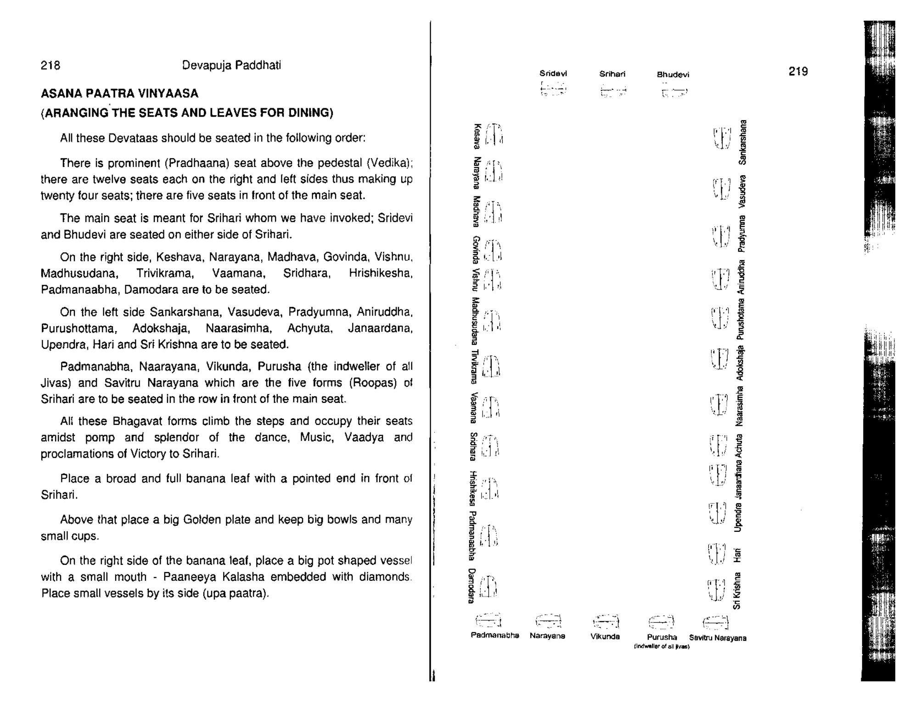
Naivedya (continuation)
49 · PDF p. 119 · printed p. 219 · Page image checked. diagram description; the complete labelled spatial arrangement is retained in the linked source image.
Printed seating diagram for Saakshi Bhojana. It visually places Srihari at the principal central seat, with Sridevi and Bhudevi alongside; twelve named Bhagavat forms on each side; and Padmanabha, Narayana, Vaikuntha, Purusha (indweller of all Jivas), and Savitru Narayana in the front row. See the linked page image for the complete spatial seat-and-leaf arrangement.
View the original PDF page image
Naivedya (continuation)
49 · PDF p. 120 · printed p. 220 · Page image checked. English prose; abbreviated Sanskrit/mantra forms retain the printed spelling and require independent Sanskrit verification.
On the right as well as on the left sides are two golden standing
lamps (deepastamba). These lamps are lighted with wicks immersed in
ghee which yield a very pleasant smell
After preparing thus, think that Anna, Paramaana and other cooked
items are served by Sridevi herself in one of her forms.
This is one amusement for Srihari who is ever satisfied, This is also
one seva of Sridevi. Vayu (Mukhyapraana) deva is blowing cool breeze
with a fan which yields a pleasant smell.
Bharati Devi and Saraswati Devi and others are moving here and
there and are serving Srihari all the time.
DEVATA FORMS AND THE ABHIMANI DEVATAS IN THE FOOD ITEMS:
Think that different Abhimana Devatas and different forms of Srihari are present in the various food items prepared and served as
Naivedya.
These should be contemplated as given below:
Abhimani Roopa of
Food ltems
Devatas Sri Hari
Rice Chandra Keshava
1
2. Paramaannam Bharati Narayana
3. Bhakshya (Sweets) Surya Madhava
4. Ghee Lakshmi Govinda
5. Ksheera (Milk) Vaani Vishnu
6. Cream of Milk Brahma Madhusudhana
7. Butter Vayu Trivikrama
8. Curd Soma, Varuna Vamana
9. Dhal with ghee Garuda Sridhara "
10. Keerai varieties (Spinach) Mitra Hrishikesha
11 Vegetables (side dishes) Sesha Padmanabha
12. Sour Varieties Girija Damodara
13. Non sour items Rudra Sankarshana
View the original PDF page image
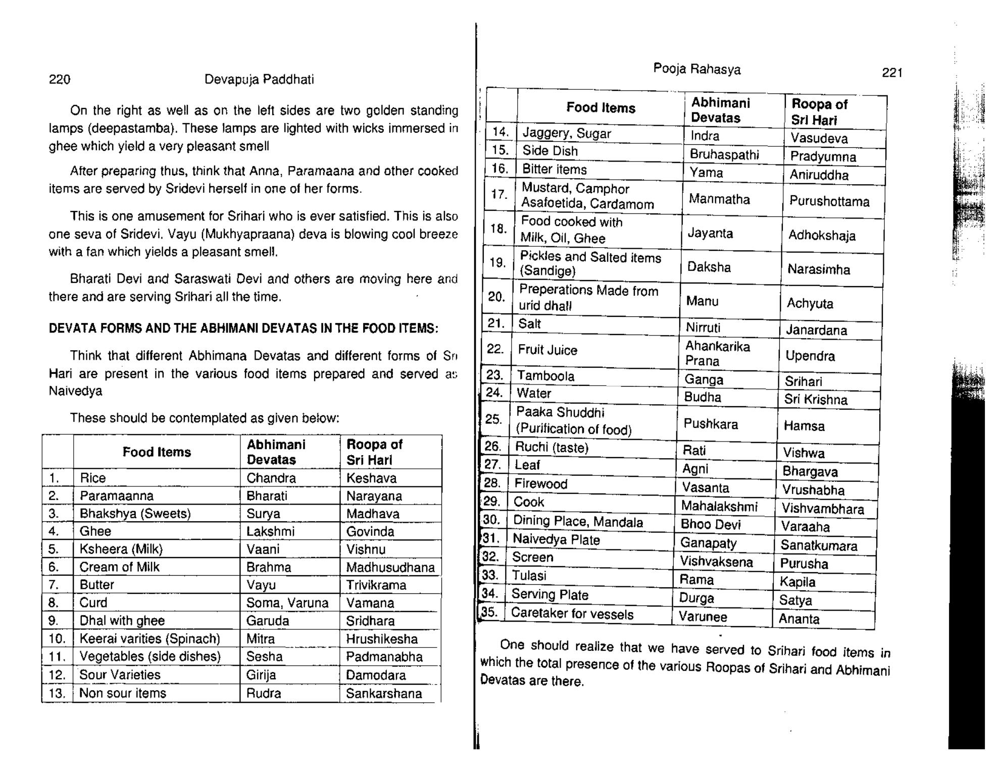
Naivedya (continuation)
49 · PDF p. 120 · printed p. 221 · Page image checked. English prose; abbreviated Sanskrit/mantra forms retain the printed spelling and require independent Sanskrit verification.
Food ltems Abhimani Roopa of
Devatas Sri Hari
14. Jaggery, Sugar lndra Vasudeva
15. Side Dish Bruhaspathi Pradyumna
16. Bitter items Yama Aniruddha
Mustard, Camphor
17.
Asafoetida, Cardamom Manmatha Purushottama
Food cooked with
18. Milk, oil, Ghee Jayanta Adhokshaja
Pickles and Salted items
19.
(Sandige) Daksha Narasimha
Preparations Made from
20.
urid dhal Manu Achyuta
21. Salt
Nirruti Janardana
Ahankarika
22. Fruit Juice
Upendra
Prana
23. Tamboola
Ganga Srihari
24. Water Budha Sri Krishna
Paaka Shuddhi
25.
(Purification of food) Pushkara Hamsa
26. Ruchi (taste) Rati Vishwa
27. Leaf Agni Bhargava
28. Firewood
Vasanta Vrushabha
29. Cook
Mahalakshmi Vishvambhara
30. Dining Place, Mandala Bhoo Devi Varaaha
31. Naivedya Plate Ganapaty Sanatkumara
'32. Screen Vishvaksena Purusha
33. Tulasi Rama Kapila
34. Serving Plate Durga Satya
Caretaker for vessels Varuni Ananta
"35.
One should realize that we have served to Srihari food items in
which the total presence of the various Roopas of Srihari and Abhimani
Devatas are there.
View the original PDF page image
Naivedya (continuation)
49 · PDF p. 121 · printed p. 222 · Page image checked. English prose; abbreviated Sanskrit/mantra forms retain the printed spelling and require independent Sanskrit verification.
Take some water in the hand and do Parishechana (pouring water
all around the food items in a circle) with the mantra "Satyam Thvirsta,
Ruthena parishichami"
Then, pray to God by saying "Hey Bhagavan! Mahalakshmi is giving l
you the Sudharasa (nectar) known as Aposhana in your right hand,
please accept this; Oh! Controller of all devoteesl Please drink the
nectar and take food as you please". Utter the mantra "Amruthopastharanamasi svaaha" and pour water in the Pela.
Then, offer water five times in the Pela with Shankha or Uddharini
to Narayana, Vasudeva, Sankarshana, Pradyumna and Aniruddha
who are known by the names Praana, Apaana, Vyaana, Udaana,
Samaana. This is known as "Pancha Praanaahuthee ".
Then, pray to Srihari thus: "Oh, Bhagavan! All substances such as
Anna, side dishes (Sadaka), dhall items etc., prepared in my house
today are dedicated to you. All substances consumed by human
beings, animals, cows, birds, insects, trees, animals that live in water,
Rishis, Gandarvas, Devatas, Supreme devotees are all dedicated to
you.
Oh, Lord of Sridevil You are ever satisfied (Nitya-trupta); you have
no worldly desires (Apta-kama); you have an infinite blissful form which ,
is complete (Ananta-ananda-sandoha Roopa;) your desires are
perpetually
perpetually satisfied; you have infinite roopas; there is nothing that
i
others can do for you (Para-nirapekshya). ln spite of all these, you are
affectionate to devotees (Bhakta-vatsala); therefore, whatever I have
given
given to you for Naivedya are all yours. Please accept the i
Mahanaivedya." I
I
"Hey Swamin! lhave placed the Naivedya before you.Please
behold the Naivedya with your divine eyes (Chakshruindriya) which
is
Kapila roopa.
Please smell the divine aroma in the Naivedya with your nose
(Ghraanendriya) which is Narasimha roopa.
View the original PDF page image
Naivedya (continuation)
49 · PDF p. 121 · printed p. 223 · Page image checked. English prose; abbreviated Sanskrit/mantra forms retain the printed spelling and require independent Sanskrit verification.
RahasYa
Pooja 223
Please pacify me with your soft words coming from your
Parashurama Roopi Mouth (Vaak lndriya).
Please relish and consume the tasty food with your tongue in the
form of Koorma. Please pardon my innumerable wrongs.
Srihari has unimaginable and wonderful powers. The Roopa of
Bhagavan in our heart, the roopa in the Saaligrama or in the idols, and
the naivedya substances are one and the same. This mental thought is
necessary for the naivedya to be complete.
Then, pray to God to accept the Naivedya prepared by us. Chant
"Dwadasha Stotra" at that time.
Thereafter, offer water; place a curtain, meditate on the form
(roopa) of Srihari who is consuming the Naivedya offered and chant
Moola Mantra 108 times. Then, pour water in the Pela uttering "Madhye
Madhye Paaneeyam SamarPaYami".
Then perform the secondary sacrificial act known as "anuyaga.
Then, utter the mantra "Amruthaapidhaanamasi swaaha" and pour
water in the pela. Chant the shloka "Mahaalakshmyaa
deeyamaanaam....." and Offer "Uttaraposhana" and request Srihari
"Please drink the divine uttaraposhana offered by Mahalakshmi with
right hand". Praying thus, offer uttaraposhana'
Then, hand over the naivedya to Vishwaksena. Then offer Srihari
wooden sandals (Paduka) and request Him to come for cleansing the
hands and offer Him the seat. Then chant the Moola Mantra and give
water twelve times to gargle the mouth.
Then pour water mixed with gandha, camphor and Kasturi in the
hands and offer water to cleanse His hands.
Offer water again to cleanse His teeth, wash His legs and give
water twelve times to cleanse His mouth.
View the original PDF page image
52. PRADAKSHINA
51–53 · PDF p. 122 · printed p. 226 · Page image checked. English prose; abbreviated Sanskrit/mantra forms retain the printed spelling and require independent Sanskrit verification.
52. PRADAKSHINA
Doing one Pradakshina chanting the thousand names of Srihari
(Sahasranaama) yields that much phala as would be obtained by doing
a Pradakshina of the Earth with its seven oceans.
View the original PDF page image
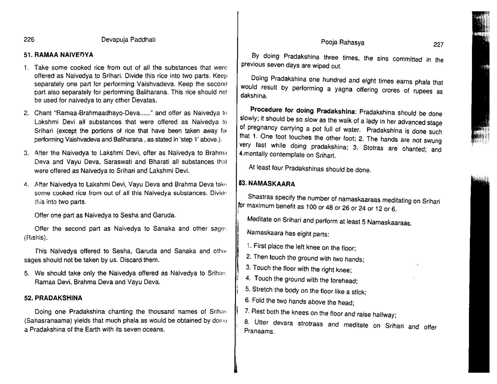
Ramaa Naivedya; Pradakshina; Namaskara (continuation)
51–53 · PDF p. 122 · printed p. 227 · Page image checked. English prose; abbreviated Sanskrit/mantra forms retain the printed spelling and require independent Sanskrit verification.
By doing Pradakshina
three times, the sins committed the
previous seven days are wiped out.
Doing Pradakshina one hundred and eight times earns phala that
would result by performing a yagna offering crores of rupees
as
dakshina.
Procedure for doing Pradakshina: Pradakshina should be done
slowly; it should be so slow as the walk of a lady in her advanced stage
of pregnancy carrying a pot full of water. Pradakshina is done such
that 1, One foot touches the other foot; 2. The hands are not swung
very fast while doing Pradakshina; 3. Stotras are chanted;
and
4. mentally contemplate on Srihari.
At least four Pradakshinas should be done.
53. NAMASKAARA
Shastras specify the number of namaskaaraas meditating on Srihari
for maximum benefit as 100 or 4g or 26 or 24 or 12 or 6.
i
Meditate on srihari and perform at least 5 Namaskaaraas.
Namaskaara has eight parts:
1. First place the left knee on the floor;
2. Then touch the ground with two hands;
3. Touch the floor with the right knee;
4. Touch the ground with the forehead;
5. Stretch the body on the floor like a stick;
6. Fold the two hands above the head;
7. Rest both the knees on the floor and raise harfway;
8. Utter devara strotraas and meditate on Srihari and
offer
Pranaams.
View the original PDF page image
Namaskara and completion (continuation)
53 · PDF p. 123 · printed p. 228 · Page image checked. English prose; abbreviated Sanskrit/mantra forms retain the printed spelling and require independent Sanskrit verification.
Namaskaara should be performed without any upper cloth
(Uttariya). When one performs Namaskaara wearing the upper cloth,
he will suffer from Kushta-roga for three births. The Namaskaara
should not be done in front of or behind the God or on the left side of
the God; the best way to perform Namaskara is on the right side of the
God. Yajur vedis may tie the Angavastra around their waist while
performing Namaskaara.
Then, chant Narayana Mantra 108 times to ensure completeness ol
the Pooja.
Thereafter, perform Tattvanyasa, Matrukaanyasa, Krudhdolkadi and
other Panchanganyasa and Ashtanganyasa in the Pratimas. Meditate
on Srihari and chant the mantras "udyat bhasvat....", "atma
devaanaam...." "Yagnena yagnam..."
Then display avagundana, sannirodana, sammukheekharana,
sannithaapana, samsthaapana and aavahana mudras starting from the
left side and ending on the right side.
Then, Plead to Srihari "Oh, king of the lotus in my heartl Please
enter my heart." Mentally assume that Srihari has entered the Tulasi
and the flowers in the hand,
The roopas of Devatas invoked in the Kalashas during Abhisheka
have become one with the roopas of pratimas.
Then, pray that all the bhagavat roopas starting from Aja up to
Shimshumaara merge with Lord Suryanarayana.
Then pray to Srihari to re enter the heart.
Take Tulasi and flowers in the hand.
Then know that the Bimbaroopi Srihari who came out of our heart
occupies our heart along with peethaavarana Devatas.
View the original PDF page image
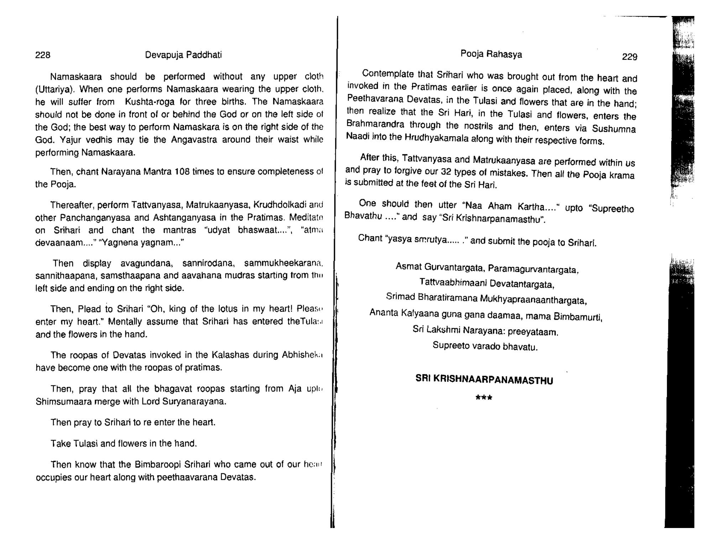
Namaskara and completion (continuation)
53 · PDF p. 123 · printed p. 229 · Page image checked. English prose; abbreviated Sanskrit/mantra forms retain the printed spelling and require independent Sanskrit verification.
Pooja Rahasya
229
Contemplate that Srihari who was brought out from the heart and
invoked in the pratimas earlier is once .g"in placed, along with the
Peethavarana Devatas, in the Tulasi and ftowers that are in the hand;
then realize that the sri Hari, in the Tulasi and flowers, enters the
Brahmarandhra through the nostrils and then, enters via sushumna
Naadi into the Hrudayakamala arong with their respective forms.
After this, Tattvanyasa and Matrukaanyasa are performed within us
and pray to forgive our 32 types of mistakes. Then all the pooja krama
is submitted at the feet of the Srihari.
one should then utter "Naaham Kartha....,, upto ,,Supreetho
Bhavathu ...." and say "Sri Krishnarpanamasthu,,.
chant "yasya smrutya..... ." and submit the pooja to srihari.
As mat Gurvantargata, paramagurvantargata,
Tattvaabhimaani Devatantargata,
i
sri mad Bharatiramana Mukhyapraanaanthargata,
Ananta Kalyaana guna gana daama, mama Bimbamurti,
Sri Lakshmi Narayana: preeyataam.
Supreeto varado bhavatu.
SRI KRISHNAARPANAMASTHU
***
View the original PDF page image
61. SHODASHOPACHARA POOJA
61 · PDF p. 133 · printed p. 248 · Page image checked. English source text; roman mantra and Sanskrit labels are retained as visibly printed and require independent Sanskrit verification.
61. SHODASHOPACHARA POOJA
While offering Shodashopachaara pooja for this image form (Bimbaroopa) of Bhagavan, mentally imagine that the following upacaras are offered:
1. ARGHYA: We are offering Arghya to Srihari. Bhagavan extends His hands and accepts it.
2. PAADYA: We are washing His sacred feet using water intended for this purpose (Paadya jala). These feet shine like the glow of one hundred Suryas. They are as elegant as lotus.
Brahma washed the same feet and was blessed. Shiva held this sanctified water and became holy. These feet remove the Ignorance of the mind (Ajnaana) from the persons who remember them. Mentally imagine that we are washing such sacred feet; sprinkle that holy water (Paada teertha) on our body and the house. We are indeed fortunate.
3. ACHAMANA: We are pouring Ganga water which gains a sweet smell because of the addition of Cardamum, Camphur, Keshari and Kastoori in His palms for His achamana. Srihari accepts it.
4. MADHUPARKA: We respectfully offer the best madhuparka. Srihari accepts it.
5. PUNARAACHAMANA: We offer water for punaraachamana.
6. ABHISHEKA: Take water in the Shankha from the Snaniya Kalasha in which one hundred and one Kalasha Devatas are present. Perform abhisheka chanting Purusha sukta “Sahasra Seersha Purusha……” to the Sacchidaanandamaya Bhagavan Srihari who has one thousand heads, has infinite forms and is Apraakruta.
View the original PDF page image
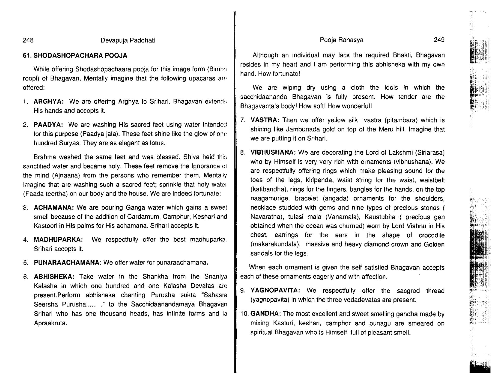
Shodashopachara Pooja (continuation)
61 · PDF p. 133 · printed p. 249 · Page image checked. English source text; roman mantra and Sanskrit labels are retained as visibly printed and require independent Sanskrit verification.
lll!
lllt
lltiLu
Although an individual may lack the required Bhakti, Bhagavan
resides in my heart and I am performing this abhisheka with my own
hand. How fortunate!
We are wiping dry using a cloth the idols in which the
sacchidaananda Bhagavan is fully present. How tender are the
Bhagavanta's body! How soft! How wonderful!
7. VASTRA: Then we offer yellow silk vastra (pitambara) which is
shining like Jambunada gold on top of the Meru hill. Imagine that
we are putting it on Srihari.
8. VIBHUSHANA: We are decorating the Lord of Lakshmi (Siriarasa)
who by Himself is very very rich with ornaments (vibhushana). We
are respectfully offering rings which make pleasing sound for the
toes of the legs, kiripenda, waist string for the waist, waistbelt
(katibandha), rings for the fingers, bangles for the hands, on the top
naagamurige, bracelet (angada) ornaments for the shoulders,
necklace studded with gems and nine types of precious stones (
Navaratna), tulasi mala (Vanamala), Kaustubha ( precious gem
obtained when the ocean was churned) worn by Lord Vishnu in His
chest, earrings for the ears in the shape of crocodile
(makarakundala), massive and heavy diamond crown and Golden
sandals for the legs.
When each ornament is given, the self-satisfied Bhagavan accepts each of these ornaments eagerly and with affection.
9. YAGNOPAVITA: We respectfully offer the sacred thread
(yagnopavita) in which the three vedadevatas are present.
10. GANDHA: The most excellent and sweet smelling gandha made by
mixing Kasturi, keshari, camphor and punagu are smeared on
spiritual Bhagavan who is Himself full of pleasant smell.
View the original PDF page image
Shodashopachara Pooja (continuation)
61 · PDF p. 134 · printed p. 250 · Page image checked. English source text; roman mantra and Sanskrit labels are retained as visibly printed and require independent Sanskrit verification.
1 1. TULASI AND FLOWERS: We worship at the feet of Srihari with
Tulasi which is His precious gift.
We place a garland of fresh and tender Tulasi in the neck of Srihari.
At the time of offering Tulasi and flowers we recite the hundred
names of Srihari, His thousand names and other prayers.
12. DHUPA: Respectfully offer dhupa.
13. DEEPA: Then, light the lamps.
14. NAIVEDYA: The naivedya consists of Nectar drops (Amruta) that
came out of the orbit of Moon (Chandramandala) and likewise
consists of various types of eatables and food with excellent tastes.
We offer this Naivedya in golden vessels studded with diamonds
and precious gems to Srihari who is aprakruta, who can always get
whatever He desires, who never fasts, who enjoys everything, who
enjoys all auspicious things, who has no desire, and who is self-
satisfied with all tastes (svakhya rasa trupta).
We respectfully dedicate rows and rows of kirideepa to the
supreme Lord who has the glow of crores and crores of Surya and who
is the giver of glittering and splendorous brightness to Surya and all
other planets in the Surya mandala.
15. PRADAKSHINA: Mentally perform pradakshina.
16. NAMASKARA: Respectfully submit the namaskara.
View the original PDF page image
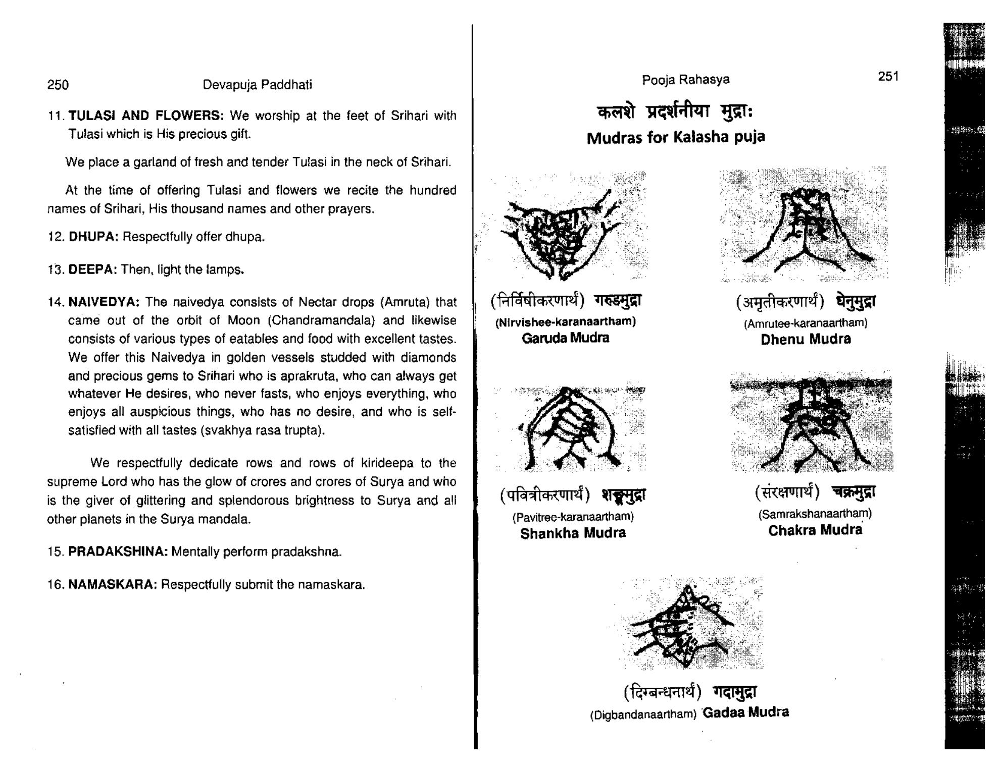
Shodashopachara Pooja (continuation)
61 · PDF p. 134 · printed p. 251 · Page image checked. heading, all five captions, and drawings; use the linked scan for exact finger positions and hand orientation.
कलशे प्रदर्शनीया मुद्रा:
Mudras for Kalasha puja
The printed p. 251 page gives five individual hand-position drawings. Its captions, read exactly as printed in Roman script, are:
1. (Nirvishee-karanaartham) Garuda Mudra
2. (Amrutee-karanaartham) Dhenu Mudra
3. (Pavittree-karanaartham) Shankha Mudra
4. (Samrakshanaartham) Chakra Mudra
5. (Digbandanaartham) Gada Mudra
The source scan is retained for the exact finger positions and hand orientation of every mudra; the captions alone do not specify those positions.
Page-image detail: The five hand-position drawings and their captions were visually checked on printed p. 251. Use the image for exact finger placement.
View the original PDF page image
Mudras for Kalasha Pooja and Avaahana (continuation)
62–63 · PDF p. 135 · printed p. 252 · Page image checked. heading, all seven captions, and drawings; use the linked scan for exact finger positions and hand orientation.
आवाहनादिमुद्रा:
Aavaahanaadi Mudras
The printed p. 252 page gives seven individual hand-position drawings, in this order:
1. Aavaahito Bhava
2. Samsthaapito Bhava
3. Sannihito Bhava
4. Sanniruddho Bhava
5. Sammukho Bhava
6. Avaguntito Bhava
7. Suprasanno Bhava
The source scan is retained for the exact finger positions and hand orientation of every mudra; the captions alone do not specify those positions.
Page-image detail: Seven mudrā drawings and captions were visually checked on printed p. 252; the last Suprasanno Bhava is an additional pictured gesture after the six āvāhanādi forms used in the recording.
View the original PDF page image
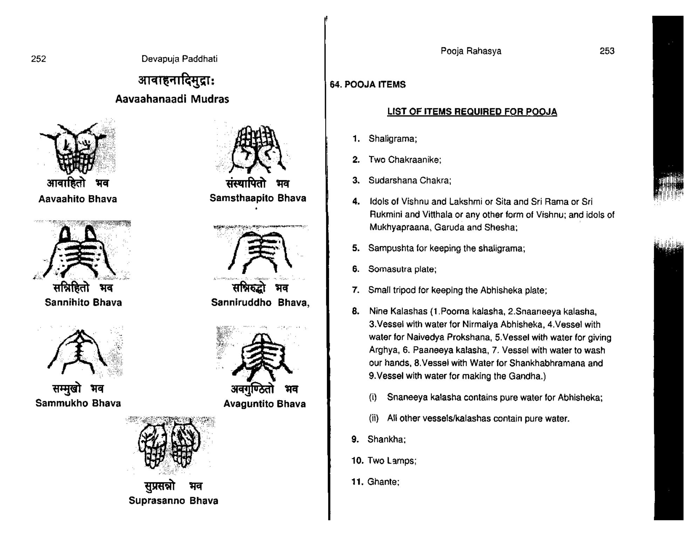
64. POOJA ITEMS
62–63 · PDF p. 135 · printed p. 253 · Page image checked. English source text; roman mantra and Sanskrit labels are retained as visibly printed and require independent Sanskrit verification.
64. POOJA ITEMS
LIST OF ITEMS REQUIRED FOR POOJA
1. Shaligrama;
2. Two Chakraanike;
3. Sudarshana Chakra;
4. Idols of Vishnu and Lakshmi or Sita and Sri Rama or Sri Rukmini and Vitthala or any other form of Vishnu; and idols of Mukhyapraana, Garuda and Shesha;
5. Sampushta for keeping the shaligrama;
6. Somasutra plate;
7. Small tripod for keeping the Abhisheka plate;
8. Nine Kalashas (1. Poorna kalasha, 2. Snaaneeya kalasha, 3. vessel with water for Nirmalya Abhisheka, 4. vessel with water for Naivedya Prokshana, 5. vessel with water for giving Arghya, 6. Paaneeya kalasha, 7. vessel with water to wash our hands, 8. vessel with water for Shankhabhramana, and 9. vessel with water for making the Gandha).
(i) Snaneeya kalasha contains pure water for Abhisheka;
(ii) All other vessels/kalashas contain pure water.
9. Shankha;
10. Two Lamps;
11. Ghante;
Page-image detail: The printed p. 253 item list was checked against the scan. Its numbering repeats 9 after the nine-kalaśa sublist, as printed. The list continues on printed p. 254.
View the original PDF page image
64. POOJA ITEMS (continuation)
64 · PDF p. 136 · printed p. 254 · Page image checked. English source text; roman mantra and Sanskrit labels are retained as visibly printed and require independent Sanskrit verification.
12. Kachola to keep Gandha, Akshata and Angaara;
13. Turmeric powder, Kumkum and Manthrakshata; Tulasi leaves and flowers
14. Betal leaves, nut (Tambula), Coconut, Dakshina;
15. Arati ladles for Trivarti, pancavarti;
16. Krishnaajina (deer skin).
17. Prepare a paste mixing Agaru, Tulasi Kaashta, Kadambha, Devdaaru, Bilwa and roots of agastya, gandha and kunkuma; make small balls from this paste prepared with gandha.
18. Make Akshata which is a paste obtained by grinding turmeric sticks and ash obtained from burnt petals of banana flowers.
Page-image detail: Printed p. 254 item-list continuation visually checked against the page image.
View the original PDF page image
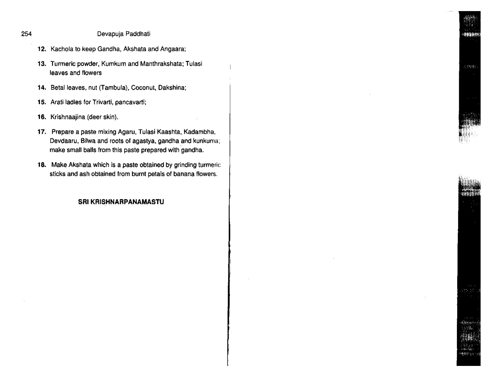
Final dedication: SRI KRISHNARPANAMASTU
64 · PDF p. 136 · printed p. 254 · Page image checked. English source text; roman mantra and Sanskrit labels are retained as visibly printed and require independent Sanskrit verification.
SRI KRISHNARPANAMASTU
Page-image detail: Final dedication visually checked against the printed p. 254 image.
View the original PDF page image